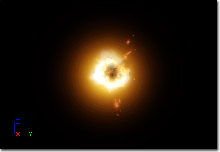
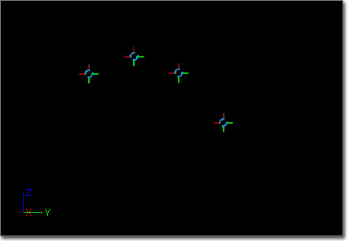
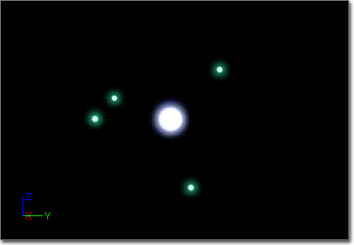
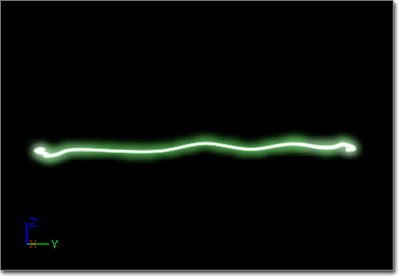
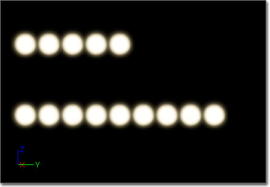
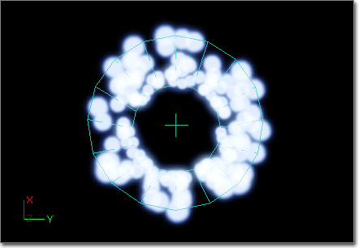
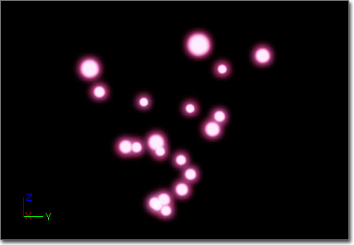
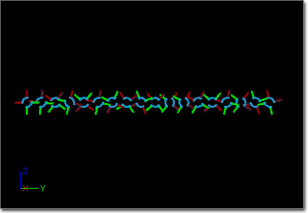
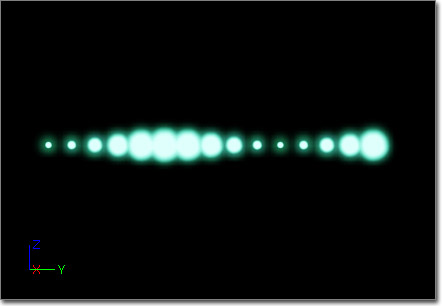

UDN
Search public documentation:
ParticleSystemReferenceCH
English Translation
日本語訳
한국어
Interested in the Unreal Engine?
Visit the Unreal Technology site.
Looking for jobs and company info?
Check out the Epic games site.
Questions about support via UDN?
Contact the UDN Staff
日本語訳
한국어
Interested in the Unreal Engine?
Visit the Unreal Technology site.
Looking for jobs and company info?
Check out the Epic games site.
Questions about support via UDN?
Contact the UDN Staff
粒子系统参考指南
- 粒子系统参考指南
- 概述
- ParticleSystem(粒子系统)类
- ParticleEmitter(粒子发射器) 类
- 模块
- 粒子模块
- Required Module(需要的模块)
- Spawn Module(产生模块)
- TypeData Modules (类型数据模块)
- 模块类型
- Acceleration Modules(加速度模块)
- Attractor Modules(引力模块)
- Beam Modules(光束模块)
- Camera Modules(相机模块)
- Collision Modules(碰撞模块)
- Color Modules (颜色模块)
- Event Modules (事件模块)
- Kill Modules(销毁模块)
- Lifetime Modules (生命周期模块)
- Location Modules (位置模块)
- Material Modules(材质模块)
- Orbit Modules(旋转模块)
- Orientation Modules(朝向模块)
- Parameter Modules（参数模块）
- Rotation Modules(旋转模块)
- Rotation Modules(旋转模块)
- Size Modules (尺寸模块)
- Spawn Modules（产生模块）
- Store Spawn Time Modules(存储产生时间模块)
- SubUV Modules (子UV模块)
- Velocity Modules (速度模块)
- 带光照的粒子
- 性能
概述


ParticleSystem(粒子系统)类
边界
FixedRelativeBoundingBox(固定的相对边界盒) -允许用户为粒子系统设定边界盒。这移除了每帧中执行边界框更新所带来的性能消耗，但这以当特效不可见时的潜在 渲染/更新 的性能消耗或者相反当特效可见时却没有 渲染/更新 的性能消耗为代价。除非您的发射器有非常广的尺寸范围，否则由于性能原因，您一般都应该使用一个固定的边界盒。
注意： 右击cascade工具条上的'Show Bounds(显示边界框)'将会在这个对话框中填写了当前在cascade中使用的动态边界盒的值，您可以从这个基础值开始将其调节为您需要的值。
bUseFixedRelativeBoundingBox(是否使用固定的相对边界盒) -如果为真，代码将使用FixedRelativeBoundingBox(固定相对边界盒)的设定值作为粒子系统的边界盒。
延迟
Delay(延迟) - 当执行ActivateSystem() 时，粒子系统在激活之前应该等待多久，以秒为单位。同时，当 Use Delay Range(使用延迟范围) 为true时，这个值作为用于随机选择延迟值的范围上限。
Delay Low(下限延迟) - 当 Use Delay Range(使用延迟范围) 为true时，这个值作为用于随机选择延迟值的范围下限。
Use Delay Range(使用延迟范围) - 如果该项为true，将从 Delay Low 和 Delay 之间选择一个随机值作为实际的延迟值。
LOD
LODDistanceCheckTime(LOD距离检测时间) - 这项是系统将每隔多长时间执行一次距离检查来决定要使用的LOD层次级别。(仅当LODMethod设置为Automatic时使用。)
LODDistances(LOD距离) -一个距离的数组，用来决定要使用哪个LOD层次。(仅当LODMethod设置为Automatic时使用。) 这些数值推荐了选择某个LOD层次界别的最小距离。比如，想象有一个具有3个LOD的粒子系统：
LODMethod(LOD方法) - 这个枚举变量说明了系统在选择适当的LOD时应使用的方法。有两种方法：
LODSettings(LOD设置) - 一个结构体数组，用于决定每个单独的LOD应使用的特定设置。目前，仅有一个设置 Lit(带光照) ，用于控制当正在使用给定的LOD时粒子系统是否接受光照。
| LODDistanceIndex (LOD距离索引) | 值 | 范围 | 选择的LOD层次 |
|---|---|---|---|
| 0 | 0.0 | 0.0 – 2499.9 | 0 (最高LOD) |
| 1 | 2500.0 | 2500.0 - 4999.9 | 1 |
| 2 | 5000.0 | 5000.0 – 无穷大 | 2 |
| 方法 | 描述 |
|---|---|
| Automatic(自动) | 基于LOD距离和检测时间来自动设置LOD。 |
| DirectSet(直接设置) | 游戏将直接设置粒子系统要使用的LOD。 |
巨大的UV
Macro UV Position(大的UV位置) - 作为生成ParticleMacroUV 材质的UV贴图坐标的中心点的相对于粒子系统的局部空间位置。
Macro UV Radius(大的UV半径) - 决定了到 Macro UV Position 位置处距离的世界空间半径， 在 Macro UV Position 处，为ParticleMacroUV 材质表达式生成的UV贴图坐标将会开始平铺。
移动设备
Use Mobile Point Sprites(使用移动设备点状平面粒子) - 如果该项为true，那么当在移动设备平台上时，粒子系统将会使用点状平面粒子进行渲染，以加快粒子渲染速度。
碰撞
Custom Occlusion Bounds(自定义遮挡边界) - 当使用 EPSOBM_CUstomBounds Occlusion Bounds Method 时，使用该边界来计算遮挡。
Occlusion Bounds Method(遮挡边界方法) - 当计算粒子系统遮挡时所使用的方法。
| 方法 | 描述 |
|---|---|
| EPSOBM_None | 不会计算粒子系统的遮挡。 |
| EPSOBM_ParticleBounds | 用于计算粒子系统遮挡的ParticleSystemComponent(粒子系统组件)的边界。 |
| EPSOBM_CUsomtBounds | 使用 Custom Occlusion Bounds(自定义遮挡边界) 值来计算粒子系统的遮挡。 |
粒子系统
Orient ZAxis Toward Camera(使Z轴朝向相机) - 如果该项为true，那么粒子系统的局部Z轴将总是面向相机。
SecondsBeforeInactive(变为不活动状态所需的时间) - 如果这段时间内(以秒为单位)没有渲染粒子系统，那么它将会变为不活动状态，停止更新。输入0可以使系统永远不会变为不活动状态。
Skip Spawn Count Check(跳过粒子产生数量检测) - 如果该项为true，那么引擎将不执行粒子生成数量限制检测。这个检测基于引擎的MaxParticleVertexMemory属性(在BaseEngine.ini中指定)限制允许产生的粒子的数量。这项仅用于在预渲染过场动画中使用的特效，因为它会在一般的游戏情形中产生性能影响。
SystemUpdateMode(系统更新方式) - 这个枚举型变量说明了粒子系统更新它的发射器时应该使用的方式。有两种模式：
EPSUM_FixedTime将不管当前的刷新频率是多少，粒子系统都会刷新在UpdateTime_FPS中给定的次数。这个模式仅用于响应时机对于另一个系统不是关键因素的情况 – 比如将发射器绑定到一个动画上。
UpdateTime_FPS(更新时间_每秒钟更新的帧数) -当使用EPSUM_FixedTime进行操作时，所使用的时间步长。
WarmupTime(准备时间) - 粒子系统在启动时所需的准备时间。这允许使发射器以全面发射的方式启动。这会降低性能，所以要保守地使用它尤其在粒子数量值较高的情况下。这对您在关卡最初加载时便想启动的粒子系统是有好处的，像冒烟的柱子或环境效果。
| 方式 | 描述 |
|---|---|
| EPSUM_RealTime | 实时地更新粒子发射器。 |
| EPSUM_FixedTime | 以固定时间步长更新粒子发射器。这锁定了系统的更新时间为游戏的更新时间，并且是性能依赖的，所以较低的帧频率会降低系统的更新时间(是更新时间减慢)，而较高的帧频率加速系统的更新时间。通常该项仅在特殊情况下使用。 |
缩略图
ThumbnailWarmup(缩略图准备时间) - 如果勾选了bUseRealtimeThumbnail(使用实时系统缩略图)，该项表示在捕获缩略图渲染之前粒子系统所需的准备时间。
Use Realtime Thumbnail(使用实时缩略图) - 如果该项为true，那么将会使用默认相机位置自动地捕获粒子系统资源在内容浏览器中显示的缩略图，并反映粒子系统的当前设置和外观，而不是使用以保存的缩略图。
 注意: 使用实时缩略图渲染会降低内容浏览器的性能。
注意: 使用实时缩略图渲染会降低内容浏览器的性能。
ParticleEmitter(粒子发射器) 类
Collapsed(合并) - 如果该项为true，那么粒子发射器在Cascade的发射器列表中将呈现为合并状态。双击ParticleEmitter(粒子发射器) 块可以切换该属性。
Emitter Editor Color(粒子发射器颜色) - 当粒子发射器合并到一起时及它曲线编辑器和调试渲染模式时ParticleEmitter所呈现的颜色。
EmitterName(发射器名称) - 发射器的名称。
Emitter Render Mode(反射器渲染模式) - 当渲染发射器的粒子时所使用的方法。
InitialAllocationCount(初始分配数量) - 这个值允许用户来声明在粒子发射器初始化时应该分配的粒子的数量。如果为0，则使用计算出的最大数量。(因为计算出的最大数量会比所需要的数量高，这个参数可以用于更严格地进行内存控制。)
| 方式 | 描述 |
|---|---|
| ERM_Normal | 正常渲染发射器的粒子，比如粒子作为平面粒子、网格物体等渲染。 |
| ERM_Point | 将发射器的粒子作为 2x2的像素块进行渲染，没有缩放，使用 Emitter Editor Color(粒子发射器颜色) 。 |
| ERM_Cross | 将发射器的粒子系统渲染为可以根据任何尺寸模块进行缩放的十字交叉线，使用 Emitter Editor Color(发射器编辑器颜色) 。 |
| ERM_None | 不渲染发射器的粒子。 |
模块
粒子模块
所有模块的基类。这个类中包含了以下公有成员：
Cascade
3DDraw Mode(3D描画模式) - 如果该项为true，那么将会为该模块显示任何可见的助手，比如预示初始位置模块的范围的线框几何体。
ModuleEditorColor(模块编辑器颜色) - 这是模块在Cascade的曲线编辑器中将使用的颜色。
Required Module(需要的模块)
每个粒子发射器都包含这个模块，该模块包换了粒子发射器所需要的所有的属性。包括以下：
发射器
Material(材质) - 应用于粒子的材质.
ScreenAlignment(屏幕对齐) - 粒子相对于照相机的朝向。允许以下方式：
bUseLocalSpace(是否使用本地空间) - 说明粒子发射器是应用它父项的世界坐标变换(FALSE)还是不应用(TRUE)。当为TRUE时，粒子发射器将在局部空间中执行所有操作。
bKillOnDeactivate(非活动状态时销毁) -说明当粒子发射器在非活动状态下是否要销毁所有粒子。如果为FALSE，任何存在的粒子在发射器为非活动状态时都将完成它们的生命周期后再销毁。
bKillOnCompleted(完成时销毁) - 说明粒子系统组件在它的持续时间结束时是否要毁掉这个发射器实例。
Sort mode(排序模式) - 粒子发射器使用的排序模式。
Use Legacy Emitter Time(使用遗留的发射器时间) - 如果该项为true，那么将会通过使用EmitterDuration调制SecondsSinceCreation来计算发射器的EmitterTime 。因为这会导致循环和变化的时间范围的相关问题，所以已经实现了一种新方法。如果该项为false，那么将使用这个新方法，EmitterTime每次更新时简单地增加DeltaTime时间长度。当发射器循环时，它将通过当前的EmitterDuration调整EmitterTime，这将产生正确的 循环/延迟 行为。
Orbit Module Affects Velocity Alignment(环绕模块影响速度对齐) - 如果该项为true，那么环绕模块所称成的运动将被应用到对齐到速度的粒子上。
| 方式 | 描述 |
|---|---|
| Square(正方形) | 统一缩放(强制使用X的设定值)，面向相机 |
| Rectangle(长方形) | 非统一缩放，面向相机 |
| Velocity(速度) | 使粒子朝向相机和粒子运动方向。允许非统一缩放。 |
| TypeSpecific(特定类型) | 使用在类型数据模块中所用的对齐方法(仅限于网格物体) |
| 方式 | 描述 |
|---|---|
| PSORTMODE_None | 不执行排序。 |
| PSORTMODE_ViewProjDepth | 根据视图映射按照深度排序列子。 |
| PSORTMODE_DistanceToView | 按照世界控件中粒子到相机的距离来排序粒子。 |
| PSORTMODE_Age_OldestFirst | 按照粒子存在的先后顺序来描画粒子，先描画最旧的粒子。 |
| PSORTMODE_Age_OldestFirst | 按照粒子存在的先后顺序来描画粒子，先描画最新的粒子。 |
延迟
bDelayFirstLoopOnly(仅延迟首次循环) - 当该项为TRUE，如果发射器的EmitterDelay(发射器延迟)值比0大且EmitterLoops(发射器循环次数)的值比1大，则发射器仅在第一次循环时执行延迟。
EmitterDelay(发射器延迟) -启动发射器时的延迟时间。这可以错开一个的粒子系统中多个发射器的启动时间。当使用延迟范围时这也用于用于选择随机延迟值的上限。
当使用延迟范围时这也用于用于选择随机延迟值的下限。
Emitter Delay Use Range(编辑器延迟应用的范围) - 如果该项为true，那么发射器的有效延迟值是从范围[Emitter Delay Low, Emitter Delay]中选择的随机值。
时间间隔
bDurationRecalcEachLoop -当该项TRUE，发射器将在每次循环时从[EmitterDurationLow(持续时间的下限值)..EmitterDuration(持续时间)]范围内选择一个新的时间段。
EmitterDuration(发射器持续时间) - 说明了发射器在进行循环前需要运行多长时间(以秒为单位)。如果设置为0，则发射器将永远不循环。
EmitterDurationLow(发射器持续时间下限值) -给出了发射器持续时间进行变化范围的下限值。
bEmitterDurationUseRange(发射器持续时间使用范围) - 当为TRUE时，发射器在启动时将会从[EmitterDurationLow(持续时间的下限值)..EmitterDuration(持续时间)]范围内选择一个持续时间。
EmitterLoops(发射器循环) - 发射器在变为非活动状态前所循环的次数。如果设置为0，发射器将持续运行，永远循环。
子UV
SubUV(子UV)数据指出发射器应该使用所应用的贴图的子图像。这对于在粒子上实现简单的动画是有用的。它包括以下成员：
InterpolationMethod(插值方法) - 一个枚举类型变量，说明了在子图像间进行插值将使用的方法。可以是以下其中之一：
RandomImageChanges(随机图像改变) - 当InterpolationMethod设置为Random(随机)时，在整个粒子的生命周期内改变图像的次数。
Sub Images_Horizontal(子图像_水平) - 在贴图水平(X)坐标轴上的子图像数量。
Sub Images_Horizontal(子图像_水平) - 在贴图水平(X)坐标轴上的子图像数量。
bScaleUV(是否缩放UV) -预示着将缩放UV值来适当地符合子图像的大小。这仅用于网格物体发射器。
| 方法 | 描述 |
|---|---|
| None | 不在此发射器上应用SubUV 模块。 |
| Linear(线性) | 子图像之间按照给定的顺序平滑地进行过渡，在当前子图像和下一个子图像之间没有混合。 |
| Linear_Blend (线性_混合) | 图像之间按照给定的顺序平滑地进行过渡，在当前子图像和下一个子图像之间混合。 |
| Random(随机) | 随机地选择下一张子图像，在当前子图像和下一个子图像之间没有混合。 |
| Random_Blend(随机_混合) | 随机地选择下一个子图像，在当前子图像和下一个子图像之间没有混合。 |
渲染
Downsample Threshold Screen Fraction（向下采样预制屏幕部分） - 粒子系统的边界必须大于该屏幕部分，以便可以向下采样来渲染发射器。默认值为0，意味着不允许向下采样。值.5意味着在以较低的分辨率渲染发射器之前，粒子系统的编辑必须占屏幕的一般或者以便以上。
向下采样的半透明对象的渲染速度比以全分辨率渲染时快，但是向下采样的每个发射器有较大的恒定性能消耗。由于这个原因，最好仅在已经确定填充频率性能消耗比该恒定性能消耗大的发射器上使用向下采样。当需要进行向下采样时，值.5通常是很好的这种处理。向下采样的半透明对象的质量也会受到影响，高频率细节会丢失，半透明对象前面的不透明边缘会呈现更明显的锯齿效果。
注意： 这个功能使用了边界半径，所以粒子系统变得的精确性是很重要的，如果需要请使用bUseFixedRelativeBoundingBox 项。
bUseMaxDrawCount(是否使用最大描画数量) -当为TRUE，发射器描画的粒子数量将永远不会超过MaxDrawCount。但所有的粒子将仍然存在并进行更新。
MaxDrawCount(最大描画数量) -限定了进行渲染的最大粒子数量。
法线
Emitter Normals Mode(反射器发现模式) - 这个模式用于为这个反射器LOD声称法线。
Normals Cylinder Direction(法线圆柱体方向) - 当 Emitter Normals Mode(发射器法线模式) 是 ENM_Cylindrical 时，所创建的法线背离穿过 Normals Sphere Center 的圆柱体，以 Normals Cylinder Direction 为方向。这个值在局部空间中。
Normals Sphere Center(法线球体中心) - 当_Emitter Normals Mode_ 是 ENM_Spherical 时，所创建的粒子法线将背离 Normals Sphere Center 。这个值在局部空间中。
| 方式 | 描述 |
|---|---|
| ENM_CameraFacing | 默认模式，基于面向几何体的相机来生成法线。 |
| ENM_Spherical | 从位于NormalsSphereCenter中心的球体生成法线。 |
| ENM_Cylindrical | 从穿过NormalsSphereCenter的圆柱体生成法线，以NormalsCylinderDirection为方向。 |
Spawn Module(产生模块)
每个粒子发射器都包含这个模块，该模块包换了粒子发射器所需要的所有的属性。包括以下：
爆发
Burst(爆发)数据意味着发射器应该在规定时间内强制发射给定数量的粒子。它涉及以下成员：
BurstList(爆发列表) -是一个包含整型Count 、CountLow及浮点型Time值的数组，用于标识您想得到的粒子爆发。Time的范围是[0..1]，和发射器的整个生命周期相对应。如果CountLow设置为-1，发射器将在给定时间内爆发Count个粒子。反之，发射器将在给定时间内爆发在[CountLow..Count]范围内的一个随机数量的粒子。
ParticleBurstMethod(粒子爆炸方法) - 当以爆炸方式发射粒子时所使用的方法。目前忽略该项。
Process Burst list(处理爆发列表) - 如果该项为true，将处理 Burst List(爆发列表) 。如果发射器中'堆叠'了多个Spawn Modules，那么如果任何一个模块禁用了该项，那么都将不会为该粒子发射器处理 Burst Lists(爆发列表) 。
粒子产生
Process Spawn Rate(处理产生速率) - 如果该项为true，将会处理 Rate(速率) 。如果发射器中'堆叠'了多个Spawn Modules，那么如果任何一个模块禁用了该项，那么都将不会为该粒子发射器处理 Rates(速率) 。
Rate(速率) - 这个浮点分布提供了粒子发射器的粒子在给定时间处的生成速率(每秒钟产生的粒子数)。
Rate Scale(速率缩放比例) - 应用到发射器的 Rate（速率） 上的缩放因数。
TypeData Modules (类型数据模块)
当添加发射器到粒子系统时它的默认类型是平面粒子发射器。但是通过使用TypeData模块也可以创建其他类型的发射器。这些模块提供了针对发射其他类型的粒子的功能，比如光束、网格物体、条带或者甚至是通过利用PhysX来使用物理仿真来控制粒子行为的发射器。 提供了以下类型的TypeData模块：AnimTrail TypeData(动画尾迹类型数据)
AnimTrail(动画尾迹)类型数据模块用于创建和 AnimNotify_Trails动画通知结合使用的发射器，这可以创建骨架网格物体几何体后面的尾迹或条纹，可以给运动添加可视化的动画效果。这个类型数据的一个示例是当挥动剑时在剑的后面看到的尾迹。 AnimTrail类型数据有以下属性：
动画
Control Edge Name(控制边缘名称) - 在为该发射器提供控制边缘的骨架网格物体上指定了插槽的名称。这个值应该和动画序列的AnimNotify_Trails通知的 Control Point Socket Name(控制点插槽名称) 相匹配。
渲染
Distance Tessellation Step Size(距离细分步长大小) - 尾迹细分点之间的距离。这用于决定尾迹具有多少个细分点以及尾迹的光滑度。精确的计算是：
TessellationPoints = Trunc((Distance Between Spawned Particles) / (DistanceTessellationStepSize))Render Geometry(渲染几何体) - 如果该项为true，将渲染尾迹几何体。一般会启用这项，否则将不能看到光束。 Render Spawn Points(渲染产生点) -如果该项为true，那么在沿着尾迹产生的每个粒子点处渲染星型。用于在Cascade中进行调试。 Render Tangents(渲染切线) - 如果该项为true，那么尾迹上每个产生粒子点的地方将会使用一条直线来渲染切线。用于在Cascade中进行调试。 Render Tessellation(渲染多边形细分) - 如果该项为true，那么将渲染每个产生的粒子之间的细分后的路径。用于在Cascade中进行调试。 Tangent Tessellation Scalar(切线多边形细分标量) - 用于多边形细分的切线标量。切线A和切线B之间的角度映射为[0.0f .. 1.0f]。。然后，这个值和TangentTessellationScalar相乘，从而得出要写份的点的数量。 Tiling Distance(平铺距离) - 用于平铺第二个UV集合的预计覆盖距离。如果该值为0.0，那么将不会传入第二个UV。
尾迹
Clip Source Segment(剪辑源片段） - 如果该项为true，那么尾迹将不会和源位置相连接。
Dead Trails On Deactivate(当粒子系统变为非激活状态时尾迹死亡) - 当粒子系统是非激活状态时，尾迹标记为死亡状态。这意味这仍然渲染尾迹，但是不会再产生新的粒子，即时重新激活粒子系统也不产生新的粒子。
Enable Previous Tangent Recalculation(启用前面切线的重新计算) - 如果该项为true，那么每次产生新的粒子时将会重新计算前面的切线。
Sheets Per Trail(每个尾迹的面片数量) - 要为尾迹渲染的围绕尾迹旋转的面片的数量。
Tangent Recalculation Every Frame(每帧重新计算切线) - 如果该项为true，那么将会每帧都重新计算切线以应用 速度/加速度。
关于如何设置AnimTrails的更多信息，请参照 动画尾迹指南文档。
Beam TypeData(光束类型数据)
Beam(光束)类型数据模块是指发射器将产生光束- 相互连接的粒子在源点(比如发射器)和目标点(比如一个粒子或actor)间形成一个流。 (鼠标悬停在图片上查看动画效果)

光束
Always On - 如果该项为true，那么发射器将确保总是有存活的粒子。
Beam Method（光束方法） - 这个枚举值允许您设置生成光束的方法。可以是以下情况之一：
Interpolation Points(插值点) - 指出了光束是否应该使用原核目标切线来插值沿着光束的曲线。如果这个值小于等于零，那么光束在源和目标之间将是一条直线(也就是，没有插值)。如果该值大于零，那么光束将通过使用源和目标各自的切线值来在源和目标之间插值从而决定二者之间的路径。这个过程中所使用的步骤的数量就是这个属性中所设置的值。
Max Beam Count(最大光束数量) - 发射器可以具有的存活的光束的最大数量。
Sheets(面片) - 沿着光束所渲染的面片的数量。光束将均匀地沿着光束路径分布。比如，如果有两个面片，那么当您从上向下看光束穿行所沿着的坐标轴时将会看到一个十字叉。
Speed(速度) - 当光束启动时，她从源移动到目标的速度。如果将这个值设置为0，那么光束将从源立即跳跃到目标处。
Texture Tile(贴图平铺) - 沿着光束平铺贴图的次数。目前，这个功能还没有实现。
Texture Tile Distance(贴图平铺距离) - 沿着光束代表源贴图一次平铺的距离。
Up Vector Step Size(向上向量的步长) - 决定光束的Up（向上）的方法。
| 方法 | 描述 |
|---|---|
| PEB2M_Distance | 使用距离属性沿着发射器的X-轴发射一个光束。 |
| PEB2M_Target | 从发射器的源到提供的目标处发射一个光束。 |
| PEB2M_Branch | 目前无用。 |
| 值 | 方法 |
|---|---|
| 0 | 在光束的每个点出计算Up（向上）向量。 |
| 1 | 在光束的开始出计算Up（向上）向量，然后在每个点出使用该向量。 |
| N | 每隔N个点来计算Up（向上）分量，并且在点之间进行插值。*注意:* 目前不支持该方法。 |
分支
Branch Parent Name - 目前无用。
距离
Distance(距离) - 当BeamMethod(光束方法)设置为PEB2M_Distance时，该浮点分布提供了光束 应该沿着X-轴穿行的距离。
渲染
Render Geometry(渲染几何体) - 如果该项为true，将渲染光束的真实几何体。一般会启用这项，否则将不能看到光束。
Render Direct Line(渲染直达线) - 如果该项为true，那么将会在光束的源和目标之间渲染一条直达线。用于在Cascade中进行调试。
Render Lines(渲染线) - 如果该项为true，将会沿着光束的每段渲染直线。用于在Cascade中进行调试。
Render Tessellation(渲染多边形细分) - 如果该项为true，那么将渲染源和目标之间经过细分的路径。用于在Cascade中进行调试。
光束变少
Taper Method(变少的方法) - 是光束随着它的长度越来越少的方法。可以是以下其中之一:
Taper Factor(光束变少因数) - 一个提供了光束要变少的量的分布。当使用常量曲线时，时间值0.0代表从光束的源头开始使它变少；当时间值为1.0时代表从目标处开始变少。
Taper Scale(光束变少的缩放比例) -用于缩放光束变少的量的数值。最终的光束变少量的值是 Taper = (TaperFactor * TaperScale)。这样做的目的主要是使它作为一个粒子参数分布，允许您根据它的应用来在代码中设置光束变少相关的缩放因数。
| 方法 | 描述 |
|---|---|
| PEBTM_None | 光束不会变少。 |
| PEBTM_Full | 无论光束的当前长度是多少，都相对于向目标移动的源来使得光束变少。 |
| PEBTM_Partial | 目前无用。 |
Mesh TypeData(网格物体数据类型)
Mesh(网格物体)类型数据模块是指发射器应该使用StaticMesh(静态网格物体)实例而不是平面粒子。 网格物体类型数据有以下属性：
相机朝向
Apply Particle Rotation As Spin - 如果该项为true，那么平面粒子的旋转量将会应用到围绕方向坐标轴的网格物体上。否则，平面粒子旋转值将应用到围绕相机所面向的坐标轴的网格物体上。
Camera Facing - 如果该项为true，那么网格物体的X-轴将总是指向相机。当设置该项时，将会忽略 Axis Lock Option(坐标轴锁定) 和其他的 锁定坐标轴/屏幕对齐 设置。
Camera Facing Option - 决定了当启用 Camera Facing 时，网格物体所朝向的方向。提供了以下选项：
注意: 所有相机朝向的锁定坐标轴选项，都假设设置了AxisLockOption项。EPAL_NONE将会作为EPAL_X对待。
注意: 所有沿着速度对齐选项都不需要将ScreenAlignment设置为 PSA_Velocity。这样做将会导致执行额外的工作。。。(它将会将网格物体朝向调整两次)。
| 选项 | 描述 |
|---|---|
| XAxisFacing_NoUp | 网格物体的局部X-轴面向相机，不会尝试使得其他坐标轴朝上或朝下。 |
| XAxisFacing_ZUp | 网格物体的局部X-轴面向相机，但网格物体的局部Z-轴不会尝试面向上面(面向世界空间中的Z-轴的正方向)。 |
| XAxisFacing_NegativeZUp | 网格物体的局部X-轴面向相机，但网格物体的局部Z-轴尝试朝向下面(面向世界空间中的Z-轴的负方向)。 |
| XAxisFacing_YUp | 网格物体的局部X-轴面向相机，但网格物体的局部Y-轴不会尝试面向上面(朝向世界空间中的Z-轴的正方向)。 |
| XAxisFacing_NegativeYUp | 网格物体的局部X-轴面向相机，但网格物体的局部Y-轴尝试朝向下面(面向世界空间中的Z-轴的负方向)。 |
| LockedAxis_ZAxisFacing | 网格物体的局部X-轴锁定在 Axis Lock Option(坐标轴锁定选项) 坐标轴上，但网格物体的局部Z-轴会旋转面向相机。 |
| LockedAxis_NegativeZAxisFacing | 网格物体的局部X-轴锁定在 Axis Lock Option(坐标轴锁定选项) 坐标轴上，但网格物体的局部Z-轴会旋转背离相机。 |
| LockedAxis_YAxisFacing | 网格物体的局部X-轴锁定在 Axis Lock Option(坐标轴锁定选项) 坐标轴上，但网格物体的局部Y-轴会旋转面向相机。 |
| LockedAxis_NegativeYAxisFacing | 网格物体的局部X-轴锁定在 Axis Lock Option(坐标轴锁定选项) 坐标轴上，但网格物体的局部Y-轴会旋转背离相机。 |
| VelocityAligned_ZAxisFacing | 网格物体的X-轴沿着速度对齐，但网格物体的局部Z-轴会旋转面向相机。 |
| VelocityAligned_NegativeZAxisFacing | 网格物体的X-轴沿着速度对齐，但网格物体的局部Z-轴会旋转背离相机。 |
| VelocityAligned_YAxisFacing | 网格物体的局部X-轴沿着速度对齐，但网格物体的局部Y-轴会旋转面向相机。 |
| VelocityAligned_NegativeYAxisFacing | 网格物体的局部X-轴沿着速度对齐，但网格物体的局部Z-轴会旋转背离相机。 |
网格物体
Allow Motion Blur(允许运动模糊) - 如果该项为true，那么从这个发射器发射出的网格物体将进行运动模糊处理。这添加了一遍速度渲染。
Mesh(网格物体) -在发射器的粒子位置处所渲染的静态网格物体。
Mesh Alignment(网格物体对齐) - 渲染网格物体时所使用的对齐方式。Required Module的 Screen Alignment(屏幕对齐) 属性必须设置为 PSA_TypeSpecific ，这个属性才有效。提供了以下选项：
Override Materia(覆盖材质)l* -如果为TRUE，网格物体将使用发射器中的材质(在requiredmodule(必须模块)分配的材质)而不是使用这些应用到网格物体上的材质进行渲染。除非您的网格物体上有多个需要分配材质的UV通道，才使用这项来覆盖MeshMaterial(网格物体材质)，否则您需要在代码中用参数进行材质分配。
| 选项 | 描述 |
|---|---|
| PSMA_MeshFaceCameraWithRoll | 面向相机，并可以绕着网格物体到相机间的向量进行旋转(旋转量由标准平面粒子旋转量提供)。 |
| PSMA_MeshFaceCameraWithSpin | 面向相机并允许绕着切线轴旋转。 |
| PSMA_MeshFaceCameraWithLockedAxis | 面向相机并保持向上的向量作为锁定的方向。 |
方位
Axis Lock Option(坐标轴锁定选项) - 将网格物体锁定到其上面的坐标轴。这覆盖了TypeSpecific网格物体对齐方式和LockAxis模块。提供了以下选项：
Pitch（倾斜） - 应用到所使用的静态网格物体上的要旋转的’预设‘倾斜度(以度数为单位)。
Roll（旋转） - 应用到所使用的静态网格物体上的要旋转的’预设‘旋转度(以度数为单位)。
Yaw(偏转) - 应用到所使用的静态网格物体上的要旋转的‘预设’偏转度(以度为单位)。
| 选项 | 描述 |
|---|---|
| EPAL_NONE | 不锁定到坐标轴上。 |
| EPAL_X | 锁定网格物体的X-轴朝向+X。 |
| EPAL_Y | 锁定网格物体的X-轴朝向+Y。 |
| EPAL_Z | 锁定网格物体的X-轴朝向+Z。 |
| EPAL_NEGATIVE_X | 锁定网格物体的X-轴朝向 -X。 |
| EPAL_NEGATIVE_Y | 锁定网格物体的X-轴朝向-Y。 |
| EPAL_NEGATIVE_Z | 锁定网格物体的X-轴朝向-Z。 |
| EPAL_ROTATE_X | 网格物体发生器忽略该项。作为EPAL_NONE对待。 |
| EPAL_ROTATE_Y | 网格物体发生器忽略该项。作为EPAL_NONE对待。 |
| EPAL_ROTATE_Z | 网格物体发生器忽略该项。作为EPAL_NONE对待。 |
PhysX Mesh TypeData(PhysX 网格物体类型数据)
PhysX网格物体类型数据模块可以用于将粒子显示为旋转的网格物体的情形。它适用于模拟较小的简单的物体，比如碎片或树叶。为了获得大量的粒子特效，已经通过使用快速实例化的渲染通道优化了这种类型的发射器。 PhysX网格物体类型数据模块中的大部分属性都是和基本网格物体数据模块中是一样的。关于这些属性的描述，请参照 Mesh TypeData(网格物体类型数据) 部分。 PhysX 网格物体类型数据模块有以下属性：
Fluid Rotation Coefficient(立体旋转度系数) - 定义了由于线速度或碰撞所导致的粒子网格物体旋转的量。
PhysX Par Sys(PhysX物理系统) - 用于模拟这个发射器的粒子的PhysXParticleSystem资源。
PhysX Rotation Method(PhysX 旋转方法) - 描述了使用粒子来模拟只有少量形状差异对象的旋转的方法。选择一种反应您的粒子网格物体的基本形状特征的方法。
Vertical Lod(垂直Lod) - 全局EmitterLodControl(发生器Lod控制)的参数。
关于使用PhysXParticleSystems的更多信息，请参照PhysX粒子系统参考指南页面。
| Relative Fadeout Time | 需要将其设置为粒子生命周期的一部分，用于图像化地使粒子淡出。LOD系统将尝试淡出粒子而不是立即删除它们。 |
| Spawn Lod Rate Vs Life Bias | 定义了通过降低粒子产生速率或降低粒子生命周期对粒子产生体积所造成的影响程度。 |
| WeightForFifo | 粒子发射器特效相对于正在删除的较旧的粒子的相对权重。如果可能，相对较低的值使得系统从另一个发射器特效中删除粒子。 |
| Weight For Spawn Lod | 和 Weight For Fifo 一样，但它是指粒子发射器特效相对于发射体积缩小程度的相对权重。 |
PhysX Sprite TypeData(PhysX平面粒子类型数据)
PhysX平面粒子类型数据模块可以通过PhysXParticleSystem使用各种物理仿真来驱动各种平面粒子的动画。 PhysX 网格物体类型数据模块有以下属性：
Phys XPar Sys(PhysX物理系统) - 用于模拟这个发射器的粒子的PhysXParticleSystem资源。
Vertical Lod(垂直Lod) - 全局EmitterLodControl(发生器Lod控制)的参数。
| Relative Fadeout Time | 需要将其设置为粒子生命周期的一部分，用于图像化地使粒子淡出。LOD系统将尝试淡出粒子而不是立即删除它们。 |
| Spawn Lod Rate Vs Life Bias | 定义了通过降低粒子产生速率或降低粒子生命周期对粒子产生体积所造成的影响程度。 |
| WeightForFifo | 粒子发射器特效相对于正在删除的较旧的粒子的相对权重。如果可能，相对较低的值使得系统从另一个发射器特效中删除粒子。 |
| Weight For Spawn Lod | 和 Weight For Fifo 一样，但它是指粒子发射器特效相对于发射体积缩小程度的相对权重。 |
Ribbon TypeData(条带类型数据)
Ribbon (条带)类型数据模块是指发射器将产生尾迹 - 相连接的粒子形成的带状物。 Ribbon(条带)类型数据有以下属性：
渲染
Distance Tessellation Step Size(距离细分步长大小) - 尾迹细分点之间的距离。这用于决定尾迹具有多少个细分点以及尾迹的光滑度。精确的计算是：
TessellationPoints = Trunc((Distance Between Spawned Particles) / (DistanceTessellationStepSize))Render Geometry(渲染几何体) - 如果该项为true，将渲染尾迹几何体。一般会启用这项，否则将不能看到光束。 Render Spawn Points(渲染产生点) -如果该项为true，那么在沿着尾迹产生的每个粒子点处渲染星型。用于在Cascade中进行调试。 Render Tangents(渲染切线) - 如果该项为true，那么尾迹上每个产生粒子点的地方将会使用一条直线来渲染切线。用于在Cascade中进行调试。 Render Tessellation(渲染多边形细分) - 如果该项为true，那么将渲染每个产生的粒子之间的细分后的路径。用于在Cascade中进行调试。 Tangent Tessellation Scalar(切线多边形细分标量) - 用于多边形细分的切线标量。切线A和切线B之间的角度映射为[0.0f .. 1.0f]。。然后，这个值和TangentTessellationScalar相乘，从而得出要写份的点的数量。 Tiling Distance(平铺距离) - 用于平铺第二个UV集合的预计覆盖距离。如果该值为0.0，那么将不会传入第二个UV。
粒子产生
Tangent Tessellation Scalar(切线生成标量) - 用于切线产生的标量。切线A和切线B之间的角度映射为[0.0f .. 1.0f]。。这个值然后和 Tangent Spawning Scalar 相乘来指出要产生的粒子的数量。
尾迹
Clip Source Segment(剪辑源片段） - 如果该项为true，那么尾迹将不会和源位置相连接。
Dead Trails On Deactivate(当粒子系统变为非激活状态时尾迹死亡) - 当粒子系统是非激活状态时，尾迹标记为死亡状态。这意味这仍然渲染尾迹，但是不会再产生新的粒子，即时重新激活粒子系统也不产生新的粒子。
Dead Trails On Source Loss(尾迹源消失时尾迹死亡) -如果该项为true，那么当尾迹的源头‘消失’时将该尾迹标记为死亡状态，也就是源粒子死亡。
Enable Previous Tangent Recalculation(启用前面切线的重新计算) - 如果该项为true，那么每次产生新的粒子时将会重新计算前面的切线。
Max Particle In Trail Count(尾迹中的最大粒子数量) - 尾迹可以同时包含的最大粒子数数量。
Max Trail Count(最大尾迹数量) - 允许的存活尾迹数量。
Render Axis(渲染坐标轴) - 尾迹的‘渲染’坐标轴 (尾迹从其上面向外伸出的坐标轴)。提供了以下选项：
Sheets Per Trail(每个尾迹的面片数量) - 要为尾迹渲染的围绕尾迹旋转的面片的数量。
Tangent Recalculation Every Frame(每帧重新计算切线) - 如果该项为true，那么将会每帧都重新计算切线以应用 速度/加速度。
| Trails_CameraUp | 传统的面向相机的尾迹。 |
| Trails_SourceUp | 使用源的向上轴作为每个生成粒子的方向。 |
| Trails_WorldUp | 使用世界空间中的向上轴。 |
模块类型
模块类型可以根据它们的基本功能进行分类。Acceleration Modules(加速度模块)
这个模块提供了给粒子应用加速度或者随着时间改变粒子速度的功能。Acceleration(加速度)
(鼠标悬停在图片上查看动画效果)
加速度
Acceleration(加速度) -一个向量分布，说明了粒子要使用的加速度。这个值是基于粒子产生时的EmitterTime获得的。
Apply Owner Scale(应用拥有者比例) - 如果该项为true，那么加速度将需要和ParticleSystemComponent的比例相乘。
这个模块将一个向量参数加到粒子负载数据上， UsedAcceleration 。这个值用于保持每个粒子在整个生命周期中的加速度。
每一帧，粒子的当前速度和基础速度的值将使用公式(velocity(速度) += acceleration(加速度)* DeltaTime(时间间隔))进行更新，这里的DeltaTime是指自从上一帧到这一帧所经过的时间间隔。
AccelerationOverLife(随着生命周期的加速度)
设置了粒子随着生命周期的加速度。它包含以下成员：
加速度
Accel Over Life(随着生命周期的加速度) -一个向量分布，说明了粒子要使用的加速度。加速度的值是基于粒子更新时的RelativeTime(相对时间)来计算获得的。
Always In World Space(总是在世界空间中) - 如果该项为true，那么则假设加速度向量位于世界空间坐标系中。否则，则假设加速度向量位于相对于ParticleSystemComponent的局部空间中。
加速度通过使用Particle.RelativeTime从Acceleration(加速度)分布中获得。粒子的当前速度和基础速度值通过使用函数(velocity += acceleration* DeltaTime)进行更新，这里的DeltaTime是指自从上一帧到这一帧所经过的时间间隔。
Attractor Modules(引力模块)
这些模块实现了使得粒子受到空间中某个特定位置吸引而朝向该位置运动的方法，该特定位置可以按一个点、一条直线或者另一个粒子位置的形式来定义。它们共同组合到一起可以创建更加复杂的特效。 这个效果是通过使用一个点引力器和一个其强度随着粒子生命周期不断变化的线引力器创建的漩涡效果。 (鼠标悬停在图片上查看动画效果)
Attractor Line(直线引力器)
直线引力器使得粒子描画到3D空间中的一条直线上。
引力器
End Point 0 - 指出了用于吸引粒子的直线的其中一个终点。
End Point 1 - 指出了用于吸引粒子的直线的另外一个终点。
Range(范围) -一个浮点分布，直线周围的引力的半径范围。相对于粒子生命周期。
Strength(强度) -引力的强度(如果为负值则为推力的强度)。相对于粒子生命周期。
Attractor Particle(粒子引力器)
(鼠标悬停在图片上查看动画效果)

引力器
Affect Base Velocity(是否影响基本速度) -如果为TRUE，基本速度将会进行速度调整。
EmitterName(发射器名称) -有引力的源发射器的名称。
Inherit Source Vel(是否继承源速度) - 如果该项为TRUE， 那么当粒子生命周期结束，它将继承源粒子的速度。
Range(范围) -一个浮点分布，它给出了源粒子周围的引力的半径范围。相对于粒子生命周期。
Renew Source(更新源) -如果为TRUE，当源粒子生命周期结束后，将选择一个新的源粒子。否则，那个被吸引的粒子将不会再被吸引。
Strength(强度) -引力的强度(如果为负值则为推力的强度)。如果 StrengthByDistance 为false，则粒子的强度和生命周期成比例关系。
Strength By Distance(是否距离决定强度) - 如果该项为TRUE，在强度曲线上的值通过使用以下公式来获得： (AttractorRange-DistanceToParticle)/AttractorRange。否则，强度通过使用源粒子的 RelativeTime来获得。
位置
SelectionMethod(选择方法) - 当从发射器中选择一个引力器的目标粒子时所使用的方法。可以是以下其中之一:
| 方法 | 描述 |
|---|---|
| EAPSM_Random | 随机地从源发射器选择一个粒子。 |
| EAPSM_Sequential | 选择一个使用连续顺序的粒子。 |
Attractor Point(点引力器)
(鼠标悬停在图片上查看动画效果)

引力器
Affect Base Velocity(影响基本速度) -如果该项为TRUE，粒子的基本速度将会进行调整来保持引力器的牵引力。
Override Velocity(覆盖速度) - 没有用途。
Position(位置) - 一个向量分布，它定义了相对于粒子发射器的点的位置。这个值通过使用EmitterTime获得。
Range(范围) - 一个浮点分布，它给出了点的影响半径。这个值通过使用EmitterTime获得。
Strength(强度) - 点引力器的强度。这个值通过使用EmitterTime获得。
Strength By Distance(距离决定强度) - 如果为TRUE，强度会沿着半径均匀地分布。
Use World Space Position(使用世界空间位置) - 如果该项为true，则假设该位置在世界空间坐标系中。
Beam Modules(光束模块)
这些模块用于使用Beam TypeData模块来配置或修改发射器的行为。Beam Modifier(光束修改器)
Beam Modifier(光束修改器)允许您修改光束的源或目标。它提供了以下属性:
修改器
位置
Position - 用于修改Source/Target(源/目标)的位置所使用的位置值。
Position Options(位置选项) - 和 Position(位置) 属性相关的选项。
| 选项 | 描述 |
|---|---|
| Lock(锁定) | 如果该项为true，那么在粒子的整个生命周期中锁定 Source/Target(源/目标)的位置。 |
| Modify(修改) | 如果该项为true，那么将会修改Source/Target(源/目标)的位置。否则，则不影响该位置。 |
| Scale(缩放比例) | 如果该项为突然true，那么修改器模块的 Position(位置) 值将会缩放 Source/Target(源/目标)的位置。否则，将覆盖Source/Target(源/目标)的位置。 |
强度
Strength（强度） -用于修改Source/Target(源/目标)的强度所使用的强度值。
Strength Options(强度选项) - 和 Strength(强度) 属性相关的选项。
| 选项 | 描述 |
|---|---|
| Lock(锁定) | 如果该项为true，那么在粒子的整个生命周期中锁定 Source/Target(源/目标)的强度。 |
| Modify(修改) | 如果该项为true，那么将会修改Source/Target(源/目标)的强度。否则，则不影响该位置。 |
| Scale(缩放比例) | 如果该项为突然true，那么修改器模块的 Strength(强度) 值将会缩放 Source/Target(源/目标)的强度。否则，将覆盖Source/Target(源/目标)的强度。 |
切线
Tangent(切线) - 用于修改Source/Target(源/目标)所使用的切线值。
Tangent Options(切线选项) - 和 Tangent 属性相关的选项。
| 选项 | 描述 |
|---|---|
| Lock(锁定) | 如果该项为true，那么在粒子的整个生命周期中锁定 Source/Target(源/目标)的切线。 |
| Modify(修改) | 如果该项为true，那么将会修改Source/Target(源/目标)的切线。否则，则不影响切线。 |
| Scale(缩放比例) | 如果该项为突然true，那么修改器模块的 Tangent(切线) 值将会缩放 Source/Target(源/目标)的位置。否则，将覆盖Source/Target(源/目标)的切线。 |
Beam Noise(光束噪音)
(鼠标悬停在图片上查看动画效果)

低频率
Apply Noise Scale(应用噪音比例) - 如果该项为true，则给光束应用该NoiseScale(噪音比例)。
频率 - 光束上的噪点的频率。
FrequencyDistance(频率距离) - 距离多远放置一个噪点。如果这个值是0.0,那么使用标准的Frequency/Frequency_LowRange对决定噪点的频率。如果该值不是0.0，那么噪点则根据静态的Frequency值所决定的距离进行分布。这使得在较短的光束上有较少的噪点，随着光束的增长会自动地添加噪点。
Frequency_Low Range - 如果该项的值大于0，那么这个值给出了频率范围的下限。当粒子生成时，它的频率将会设定在[Frequency_LowRange..Frequency]范围之内。
Low Freq_Enabled - 如果该项为true,则意味着启用了低频率噪音。
注意: 目前，仅支持低频率噪音。
Noise Lock Radius(噪音锁定半径) - 噪点周围球体的半径，该半径意味着噪点锁定。
Noise Lock Time(噪音锁定时间) - 在选择新的噪点之前将该早点锁定多长时间。
Noise Range(噪音范围) - 提供了噪点位置范围的分布。如果使用常量曲线，那么时间 0.0对应着第一个频率点，时间1.0对应着目标点。剩余的点通过使用公式(CurrentFrequencyPoint * (1.0/TotalFrequencyPoints))计算查找。
Noise Range Scale(噪点范围缩放比例) - 这个分布提供了随着发射器时间缩放噪音范围的方法。
Noise Scale(噪音缩放比例) - 这是当bApplyNoiseScale为true时应用到噪音范围上的缩放因数。这个分布的查找值是由现有噪点数量除以最大噪点数量(也就是Frequency)来获得。
Noise Speed(噪音速度) - 一个向量分布，提供了噪点的移动速度。
Noise Tangent Strength(噪音切线强度) - 沿着光束插值的过程中应用到噪点切线上的强度。
Noise Tension - 应用到细分的噪音线上的张力。
Noise Tessellation(噪音细分) - 要在噪音点之间插值的点的数量。
NRScale Emitter Time - 如果该项为true，那么将使用发射器时间计算获得NoiseRangeScale的结果。如果该项为FALSE，那么将使用粒子时间计算获得NoiseRangeScale的结果。
Oscillate(遮挡) - 如果该项为true，那么噪点将会在光束直线上前后震动。
Smooth(平滑度) - 如果该项为true，那么将尝试在噪点之间平滑移动。
Target Noise(目标点噪音) - 如果该项为true，则在目标点应用噪音。
Use Noise Tangents(使用噪音切线) - 如果该项为true，则计算每个噪声点的切线。尚未使用。
Beam Source（光束源）
Beam Source(光束源)模块实现了光束发射器的一个源。(如果光束发射器中没有光束源模块，那么则使用发射器本身的位置作为源点。) 它提供了以下属性:
源
Lock Source(锁定源) - 如果该项为true，那么则仅在粒子生成时设置源的位置。
Lock Source Strength(锁定源的强度) - 如果该项为true，那么仅在粒子产生时设置源的强度。
Lock Source Tangent(锁定源的切线) - 如果该项为true，那么则仅在粒子生成时设置源的切线。
Source(源) - 一个向量分布，允许您设置源的位置。当方法设置为Default时或者当其他方法不能确定源点时使用该项。这个值通过使用当前的发射器时间从分布中查找获得。
Source Absolute(绝对位置源) - 如果该项为true，那么则把该源作为世界空间中的一个绝对位置(也就是，不变换它)。
Source Method(源方法) - 这个枚举值允许您设置获得光束源的位置的方法。可以是以下情况之一：
Source Name(源名称) -用作为源的actor的名称。仅当SourceMethod 设置为PEB2STM_Actor时使用。如果没有找到该actor ，那么将会回滚回来使用Source(源)分布。
Source Strength（源强度） - 一个浮点分布，提供了每个光束源点的切线强度。这个值使用当前的发射器时间计算获得。无论获得 Source/SourceTangent 所使用的方法是什么，都会使用这个强度。
Source Tangent(源切线) - 一个向量分布，允许设置源的切线。当SourceTangentMethod设置为PEB2STTM_Distribution使用该项。这个值使用当前的发射器时间计算获得。
Source Tangent Method(源切线方法) - 这个枚举值允许您设置获得光束源的切线的方法。可以是以下情况之一：
| 方法 | 描述 |
|---|---|
| PEB2STM_Default | 使用Source(源)分布。 |
| PEB2STM_UserSet | 使用用户设置的值。 |
| PEB2STM_Emitter | 使用发射器位置作为源。 |
| PEB2STM_Particle | 目前没有使用。 |
| PEB2STM_Actor | 使用具有给定名称的actor的位置作为源。 |
| 方法 | 描述 |
|---|---|
| PEB2STTM_Direct | 使用源和目标之间的直线。 |
| PEB2STM_UserSet | 使用用户设置的值。 |
| PEB2STTM_Distribution | 使用SourceTangent分布中的值。 |
| PEB2STTM_Emitter | 使用发射器面向的方向。 |
Beam Target(光束目标)
Beam Target(光束目标)模块实现了光束的一个单独目标。(如果光束发射器中没有光束目标模块，那么发射器将假设定向地使用光束。) 它提供了以下属性:
目标
Lock Radius(锁定半径) - 当前光束末端位于该球体半径内时，认为已经锁定了目标点。当使用设置了Speed中的光束时使用该项。
Lock Target(锁定目标) - 如果该项为true，那么仅在粒子产生时设置目标位置。
Lock Target Strength(锁定目标强度) - 如果该项为true，那么仅在粒子产生时设置目标强度。
Lock Target Tangent(锁定目标切线) - 如果该项为true，那么仅在粒子产生时设置目标切线。
Target(目标) - 一个向量分布，允许您设置目标位置。当方法设置为Default时或者当其他方法不能确定目标点时使用该项。这个值通过使用当前的发射器时间从分布中查找获得。
Target Absolute(绝对目标点) - 如果该项为true，那么将把目标当做世界空间中的绝对位置对待(也就是，不变换它)。
Target Method(目标方法) - 这个枚举值允许您设置获得光束目标位置的方法。可以是以下情况之一：
注意： 如果将目标点设置为发射器或粒子，那么目标将会使用分布中的值。
Target Name(目标名称) - 用作为目标的actor的名称。仅当TargetMethod 设置为PEB2STM_Actor时使用。如果没有找到该actor ，那么将会回滚回来使用Target分布。
Target Strength(目标强度) - 一个浮点型分布，提供了每个光束的目标点出的切线的强度。这个值使用当前的发射器时间计算获得。无论获得Target/TargetTangent所使用的方法是什么，都会使用这个强度。
Target Tangent(目标切线) - 一个向量分布，允许您设置目标点的切线。当TargetTangentMethod设置为PEB2STTM_Distribution使用该项。这个值使用当前的发射器时间计算获得。
Target Tangent Method(目标切线方法) - 这个枚举值允许您设置获得光束目标点切线所使用的方法。可以是以下情况之一：
| 方法 | 描述 |
|---|---|
| PEB2STM_Default | 使用Target 分布。 |
| PEB2STM_UserSet | 使用用户设置的值。 |
| PEB2STM_Emitter | 目前不支持。 |
| PEB2STM_Particle | 目前不支持。 |
| PEB2STM_Actor | 使用具有给定名称的actor的位置作为源。 |
| 方法 | 描述 |
|---|---|
| PEB2STTM_Direct | 使用源和目标之间的直线。 |
| PEB2STM_UserSet | 使用用户设置的值。 |
| PEB2STTM_Distribution | 使用TargetTangent分布上的值。 |
| PEB2STTM_Emitter | 使用发射器面向的方向。 |
Camera Modules(相机模块)
这个模块针对相机修改发射器行为。Camera Offset(相机偏移量)
Camera Offset(相机偏移量)模块允许相对于相机偏移平面粒子的位置。它提供了以下属性:
相机
Camera Offset(相机偏移量) - 应用到平面粒子位置处的相对于相机的偏移量。
Spawn Time Only(仅粒子产生时) - 如果该项为true，那么这个模块的偏移量仅在粒子最初产生时进行处理。
Update Method(更新方法) - 指出了更新这个模块的偏移量时所使用的方法。
| 方法 | 描述 |
|---|---|
| EPCOUM_Direct | S使用 Camera Offset 的值直接设置偏移量，覆盖之前的任何偏移量。 |
| EPCOUM_Additive | 将这个模块中的 Camera Offset 的值添加之前的任何偏移量上。 |
| EPCOUM_Scalar | 通过 Camera Offset 的值缩放任何现有偏移量。 |
Collision Modules(碰撞模块)
Collision(碰撞)
(鼠标悬停在图片上查看动画效果)

碰撞
Apply Physics(应用物理) - 一个布尔值，指出了是否在粒子及其和它碰撞的对象上应用物理。[注意： 目前这是一个单向的应用方式-从粒子 --> 物体。粒子没有将物理应用到碰撞的物体上 – 它仅是产生一个应用到它碰撞的物体上的一个冲力。
Collision Completion Option(碰撞完成时选项) -一个枚举变量，它预示了一旦粒子达到了MaxCollisions(最大碰撞次数)时将会发生什么。可以是以下情况之一：
Damping Factor(衰减因数) - 一个向量分布，它说明了粒子在一次碰撞后速度将减慢多少。这个值可以根据在粒子产生时的EmitterTime来获得，并且该值存储在每个粒子中。
Damping Factor Rotation(旋转衰减因数) -一个向量分布，它说明了粒子在一次碰撞后它的旋转会减慢多少。这个值可以根据在粒子产生时的EmitterTime来获得，并且该值存储在每个粒子中。
Delay Amount(延迟量) - 在检查粒子碰撞之前要延迟多长时间。这个值可以通过使用EmitterTime(发射器时间)来获得。在更新期间直到粒子RelativeTime (相对时间)超过 Delay Amount(延迟量) 之前都会设置IgnoreCollisions 粒子标志。
Dir Scalr(方向标量) - 一个浮点型值，用于缩放粒子的边界框从而有助于避免穿透或较大的间隙。
Max Collisions(最大的碰撞次数) -一个浮点分布，它说明了一个粒子可以进行的最大碰撞次数。这个值可以根据在粒子产生时的EmitterTime来获得。
Only Vertical Normals Decrement Count(仅垂直法线减少碰撞次数) - 如果为TRUE，不和碰撞平面的法线垂直的碰撞仍然可以起作用，但该碰撞不会被计入到粒子的MaxCollisions(最大碰撞次数)内。这可以使粒子从墙上弹回并落到地面上。
Particle Mass(粒子质量) -一个说明了粒子质量的浮点型分布-当bApplyPhysics为真时可以使用。这个值可以根据在粒子产生时的EmitterTime来获得。
Pawns Do Not Decrement Count(与Pawn碰撞不减少碰撞次数) -如果为真，粒子和Pawn的碰撞仍然起作用，但是这次碰撞不会被计入到粒子的MaxCollisions(最大碰撞次数)内。这可以使粒子从pawn上弹回，但不会使粒子在半空中冻结。
Vertical Fudge Factor(垂直偏差因数) - 一个浮点值，用于决定达到什么程度算是垂直。绝对的垂直将是Hit.Normal.Z == 1.0f。这允许在[1.0-VerticalFudgeFactor..1.0]范围内的Z向量都被认为是垂直碰撞。
| 选项 | 描述 |
|---|---|
| EPCC_Kill | 当达到MaxCollisions(最大碰撞次数)时，销毁粒子。(这是默认行为) |
| EPCC_Freeze | 原位冻结粒子。 |
| EPCC_HaltCollisions | 停止碰撞检测，但是继续保持更新。这很可能会导致粒子‘穿过’物体。 |
| EPCC_FreezeTranslation | 停止平移粒子，但其它所有都保持更新。 |
| EPCC_FreeRotation | 停止旋转粒子，但其它所有都保持更新。 |
| EPCC_FreeMovement | 停止 平移/旋转 粒子，但其它所有都保持更新。 |
性能
Drop Detail(丢失细节) - 如果该项为true，那么当WorldInfo的 Drop Detail 属性也为true时将忽略这个模块。
这个模块将增加两个向量(UsedDampingFactor(使用的衰减因数) 和 UsedDampingFactorRotation(使用的旋转衰减因数))和一个整型变量(UsedMaxCollisions(最大的碰撞次数))到粒子有效负载数据。这些值用于跟踪每个粒子的碰撞信息。
以下的伪代码解释了碰撞粒子的更新过程。
决定了粒子的位置。因为直到调用Update之前都不会计算真实的位置所以这是需要的
。
决定了在线性检测时所使用的大致范围。
if (SingleLineCheck indicates collision)
{
if (UsedMaxCollisions-- > 0) // 如果仍然有碰撞存在
{
根据碰撞调整粒子的速度和旋转
if (Applying physics)// 应用物理
{
给碰撞物体施加一个适当的推力
(质量可以从相对于粒子时间的分布获得。)
。
}
}
else
{
已经没有碰撞存在
根据CollisionCompletionOption(碰撞完成选项)采取是相应的行动。
}
}
Color Modules (颜色模块)
Color(颜色)模块可以影响发射出的粒子的颜色。Initial Color(初始颜色)
(鼠标悬停在图片上查看动画效果)
颜色
Clamp Alpha(Alpha区间) -如果为TRUE，alpha值的范围将在[0.0 .. 1.0f]之间。。
Start Alpha(初始透明度) -一个向量分布，说明了粒子的alpha向量。这个值可以基于粒子产生时的EmitterTime来获得。
Start Color(初始颜色) -.一个向量分布，说明了粒子的颜色。这个值可以基于粒子产生时的EmitterTime来获得。
在Spawn中，该模块通过使用发射时间来从分布中获得适当的值，并将Particle.Color 和 Particle.BaseColor的值直接设置给它。
Init Color (Seeded) (初始模块 (种子))
Init Color (Seeded)模块和 Initial Color模块一样，因为它在粒子产生时设置了粒子的初始颜色；但是，这个模块允许您在选择分布值时指定的随机种子信息，从而使得每次使用发射器时模块产生更加一致的效果。它包含以下成员：
颜色
Clamp Alpha(Alpha区间) -如果为TRUE，alpha值的范围将在[0.0 .. 1.0f]之间。。
Start Alpha(初始透明度) -一个向量分布，说明了粒子的alpha向量。这个值可以基于粒子产生时的EmitterTime来获得。
Start Color(初始颜色) -.一个向量分布，说明了粒子的颜色。这个值可以基于粒子产生时的EmitterTime来获得。
随机种子
Random Seed Info(随机种子信息) - 这个模块的属性选择“随机”值时所使用的随机种子。
在Spawn中，该模块通过使用发射时间来从分布中获得适当的值，并将Particle.Color 和 Particle.BaseColor的值直接设置给它。
| 属性 | 描述 |
|---|---|
| Get Seed From Instance(从实例中获得种子) | 如果该项为true，那么模块将会尝试从拥有者实例中获得种子。如果没有获得随机种子，那么它将回滚回从使用 Random Seeds(随机种子) 数组中获得随机种子。 |
| Instance Seed Is Index（实例种子是索引值） | 如果该项为true，那么从实例中获得的种子值将代表 Random Seeds 数组中的额索引。 |
| Parameter Name(参数名称) | 为设置这个种子所放置的实例而暴露的名称。 |
| Random Seeds(随机种子) | 这个模块使用的随机种子值。如果指定了多个值，那么实例将会实际地选择一个值。 |
| Reset Seed On Emitter Looping(在每次发射器循环时重新设置种子) | 如果该项为true, 那么每次发射器循环时将会重新设置这个种子。 |
Parameter Color(参数颜色)
Parameter Color(参数颜色)模块用于根据粒子发射器实例参数来设置粒子产生时的颜色。它允许同一个发射器在一个关卡中进行实例化，但是产生不同的颜色。它包含以下成员：
颜色
Color Param(颜色参数) -这是在MaterialInstanceConstant(材质实例常量)中参数的名称，用于获取颜色。
Default Color(默认颜色) -如果没有在发射器中设置颜色，则使用默认颜色。
在Spawn中，模块从实例参数中计算出适当的值，并将其设置为颜色值。如果没有找到，则使用 Default Color(默认颜色) 。
设置: 通过这个模块设置颜色。意味着在此之前的任何颜色模块都将会被覆盖。
注意: 这个模块和在Initial Color 模块中使用ParticleParameter 分布是等价的。(它是在现有的ParticleParameter(粒子参数)之前写的。)
Color Over Life(随生命周期变换颜色)
(鼠标悬停在图片上查看动画效果)
颜色
Alpha Over Life(随生命周期变换透明度) -一个向量分布，说明了应用到粒子上的透明度分量。这个值可以通过使用粒子在更新过程中的RelativeTime(相对时间)来计算获得。
Clamp Alpha(Alpha区间) -如果为TRUE，alpha值的范围将在[0.0 .. 1.0f]之间。。
Color Over Life(随声明周期改变颜色) -一个向量分布，说明了要应用到粒子的颜色。这个值可以通过使用粒子在更新过程中的RelativeTime(相对时间)来计算获得。
在Spawn中，这个模块通过使用粒子时间从分布中获得相应的值，并将Particle Color 和 BaseColor值设置给它。
设置: 通过这个模块设置颜色。意味着在此之前的任何颜色模块都将会被覆盖。
在Update中，这个模块通过使用粒子时间及从分布中获得相应的值，并将Particle.Color的值设置给它。
Scale Color/Life(随着粒子生命周期缩放粒子颜色)
Scale Color/Life模块用于随着粒子生命周期缩放粒子的颜色。它包含以下成员：
颜色
Alpha Scale Over Life(随生命周期变化的不透明度缩放比例) -一个向量分布，说明了应用到粒子上的透明度分量。这个值可以通过使用粒子在更新过程中的RelativeTime(相对时间)来计算获得。
Color Scale Over Life(随声明周期变换的颜色缩放比例) -一个向量分布，说明了要应用到粒子的颜色。这个值可以通过使用粒子在更新过程中的RelativeTime(相对时间)来计算获得。
Emitter Time(发射时间) - 一个布尔型变量，说明了特效是基于发射器的时间还是粒子的实际时间。
在Spawn 和 Update函数中，这个模块通过使用选定的时间从分布中获取适当的值，并使用这些值来按比例改变粒子的颜色。
Event Modules (事件模块)
Event(事件)模块允许您基于粒子自身间、不同粒子之间、或者粒子和世界之间的相互作用来产生事件，然后监听这些事件并在一个交互的粒子系统关卡中导致一系列的反应。一个较好的例子是当一个粒子和世界中其它物体产生碰撞时发生了碰撞事件，然后在这些碰撞发生的地方产生一些粒子。Event Generator(事件产生器)
这个模块将根据您指定的条件产生一个(或多个)事件。这个模块有一个单独的 Events 数组，它包含了您想让发射器生成的所有时间。_Events_ 数组中的每项都有以下属性:
事件
Type - 事件类型。可能的类型包括：
Frequency(频率) -多长时间触发一次事件。比如说<=1意味着每次都触发事件。也可以每隔一次碰撞触发一次事件。
Low Freq(低频率) - 允许在频率范围内随机选择频率。-1意味着使用不在该范围内的频率。
Particle Frequency(粒子频率) - 每个粒子可以触发事件的次数。
First Time Only(仅第一次时) - 是否仅在当某种情况第一次发生时触发事件。
Last Time Only(仅最后一次时) - 是否仅当某种情况最后一次发生时触发事件。
Use Reflected Impact Vector(使用反射的冲力向量) -布尔型变量，决定了碰撞事件的方向是否是冲力向量的方向而不是碰撞平面的法线方向。
Custom Name(自定义名称) - 这是您的事件的名称，它使您可以建立一个监听器来监听这个事件名然后执行相应的动作。所有的事件都需要命名。
Particle Module Events To Send To Game(要发送给游戏的粒子模块事件) - 当生成这个事件时我们就像将其触发的事件。需要您的游戏实现ParticleModuleEventSendToGame 的新的子类，ParticleModuleEventSendToGame 代表了粒子事件可以出发的游戏时间的类型。
| 类型 | 描述 |
|---|---|
| EPT_Any | 从任何可能发生的事件中产生指定的事件。 |
| EPT_Spawn | 当粒子发射器产生一个粒子，产生指定的事件。 |
| EPT_Death | 当这个发射器中的粒子死亡时，产生指定的事件。 |
| EPT_Collision | 当这个发射器的粒子和某物发生碰撞时，产生指定的事件。 |
| EPT_Kismet | 产生一个和Kismet 进行交互的事件，允许您执行Kismet 脚本或者允许Kismet 脚本来执行粒子的命令。 |
Event Receiver Kill All(事件接收器销毁所有)
监听命名事件，然后销毁发射器的所有粒子。
ParticleModuleEventReceiverKillParticles
Stop Spawning(停止生成粒子) - 如果该项为true，那么除了销毁所有现有粒子外发射器将停止产生新的粒子。
事件
Event Generator Type(事件生成器类型) -所监听的事件的类型。
Event Name - 要监听的事件的名称。
| 类型 | 描述 |
|---|---|
| EPT_Any | 监听具有 Event Name(事件名称) 属性中指定的名称的任何事件类型。 |
| EPT_Spawn | 监听生成粒子事件。 |
| EPT_Death | 监听粒子死亡事件。 |
| EPT_Collision | 监听碰撞事件。 |
| EPT_Kismet | 监听通过Particle Event Generator(粒子事件生成器)动作在Kismet中生成的事件。 |
Event Receiver Spawn(事件接收器Spawn)
监听指定名称的事件，然后根据所触发的事件来生成粒子。
位置
Use PSys Location -布尔型变量，决定spawn（粒子生成）事件是在触发该事件的粒子处发生还是在粒子系统的原点发生。
源
Event Generator Type(事件生成器类型) -所监听的事件的类型。
Event Name - 要监听的事件的名称。
| 类型 | 描述 |
|---|---|
| EPT_Any | 监听具有 Event Name(事件名称) 属性中指定的名称的任何事件类型。 |
| EPT_Spawn | 监听生成粒子事件。 |
| EPT_Death | 监听粒子死亡事件。 |
| EPT_Collision | 监听碰撞事件。 |
| EPT_Kismet | 监听通过Particle Event Generator(粒子事件生成器)动作在Kismet中生成的事件。 |
粒子产生
Spawn Count - 决定了当触发一个事件时生成粒子的个数。
Use Particle Time(使用粒子时间) - 对于基于死亡的事件接收，如果这项为true，那么因为这是用事件的ParticleTime(粒子时间)来查找SpawnCount(生成数量)。否则(在接受到所有的其他事件中)使用事件的发射器时间。
速度
Inherit Velocity(继承速度) - 如果该项为true，那么将会使用触发事件的粒子的速度作为生成粒子的起始速度。
Inherit Velocity Scale(继承速度的比例因数) - 如果 Inherit Velocity(继承速度) 为true，该项作为缩放该速度的比例因数。
Kill Modules(销毁模块)
如果某个给定粒子满足了特定实现所定义的规则，那么Kill Modules(销毁模块)将销毁给定的粒子。Kill Box(销毁盒)
Kill Box(销毁盒)模块用于当粒子移动到所定义的销毁盒外面时销毁该粒子。它包含以下成员：
销毁
Lower Left Corner(左下角) - 一个确定了边界盒的左下角的向量分布。
Upper Right Corner(右上角) - 一个确定了边界盒的右上角的向量分布。
Absolute(绝对位置) -如果为TRUE，边界盒边角的设置将认为是世界坐标空间的值并且在测试时保持不变。如果为FALSE，边界盒将被转换为发射器的世界坐标空间。
Kill Inside(销毁边界盒内粒子) -如果为TRUE，落在边界盒内的粒子将会被销毁。如果为FALSE(默认)，边界盒外面的粒子将会被销毁。
如果启用了3D预览模式，在Cascade的预览窗口中将会描画线框。
Kill Height(销毁高度)
Kill height (销毁高度)模块用于当粒子移动到所定义的高度上面时销毁该粒子。它包含以下成员：
销毁
Height(高度) -一个浮点分布，定义了一个高度，当粒子在此高度或者高于某个高度时将被销毁。
Absolute(绝对位置) - 如果为TRUE，高度值将被认为是世界坐标空间的值并且在测试时保持不变。如果为FALSE，高度值将被转换为发射器的世界坐标空间。
Floor(值下限) -如果为TRUE，当粒子下降到低于高度值的位置时销毁粒子。如果为FALSE(默认)，当粒子上升到高于高度值的位置时销毁粒子。
如果启用了3D预览模式，在销毁粒子的高度值处将渲染一个平面。
Lifetime Modules (生命周期模块)
Lifetime(生命周期)
(鼠标悬停在图片上查看动画效果)

生命周期
Lifetime(生命周期) -一个浮点分布，说明了粒子的生命周期,以秒为单位。这个值可以基于粒子产生时的EmitterTime来获得。
在Spawn中，模块通过使用粒子的当前发射时间来从分布中获取适当的值。这个值会被增加到Particle.OneOverMaxLifetime文本域中，从而允许应用多个生命周期模块。
Lifetime(Seeded)(生命周期(种子))
Lifetime (Seeded)模块和 生命周期模块一样，因为它也在粒子产生时设置了粒子的生命周期；但是，这个模块允许您在选择分布值时指定的随机种子信息，从而使得每次使用发射器时模块产生更加一致的效果。它包含以下成员：
生命周期
Lifetime(生命周期) -一个浮点分布，说明了粒子的生命周期,以秒为单位。这个值可以基于粒子产生时的EmitterTime来获得。
随机种子
Random Seed Info(随机种子信息) - 这个模块的属性选择“随机”值时所使用的随机种子。
在Spawn中，模块通过使用粒子的当前发射时间来从分布中获取适当的值。这个值会被增加到Particle.OneOverMaxLifetime文本域中，从而允许应用多个生命周期模块。
| 属性 | 描述 |
|---|---|
| Get Seed From Instance(从实例中获得种子) | 如果该项为true，那么模块将会尝试从拥有者实例中获得种子。如果没有获得随机种子，那么它将回滚回从使用 Random Seeds(随机种子) 数组中获得随机种子。 |
| Instance Seed Is Index（实例种子是索引值） | 如果该项为true，那么从实例中获得的种子值将代表 Random Seeds 数组中的额索引。 |
| Parameter Name(参数名称) | 为设置这个种子所放置的实例而暴露的名称。 |
| Random Seeds(随机种子) | 这个模块使用的随机种子值。如果指定了多个值，那么实例将会实际地选择一个值。 |
| Reset Seed On Emitter Looping(在每次发射器循环时重新设置种子) | 如果该项为true, 那么每次发射器循环时将会重新设置这个种子。 |
Location Modules (位置模块)
Location(位置)
(鼠标悬停在图片上查看动画效果)

位置
StartLocation(初始位置) -一个向量分布，它说明了发射粒子时粒子相对于发射器的位置。这个值可以基于粒子产生时的EmitterTime来获得。
在Spawn中，模块通过使用粒子的当前发射时间来从分布中获取适当的值。如果粒子发生器没有 Use Local Space(使用本地空间) 标志，这个值将会被转换为世界坐标空间中的值。然后这个值会增加到Particle.Location文本域中。
Initial Loc (Seeded)(初始位置(种子))
Initial Loc (Seeded)模块和 初始位置模块一样，因为它也在粒子产生时设置了粒子的初始位置；但是，这个模块允许您在选择分布值时指定的随机种子信息，从而使得每次使用发射器时模块产生更加一致的效果。它包含以下成员：
位置
StartLocation(初始位置) -一个向量分布，它说明了发射粒子时粒子相对于发射器的位置。这个值可以基于粒子产生时的EmitterTime来获得。
随机种子
Random Seed Info(随机种子信息) - 这个模块的属性选择“随机”值时所使用的随机种子。
在Spawn中，模块通过使用粒子的当前发射时间来从分布中获取适当的值。如果粒子发生器没有 Use Local Space(使用本地空间) 标志，这个值将会被转换为世界坐标空间中的值。然后这个值会增加到Particle.Location文本域中。
| 属性 | 描述 |
|---|---|
| Get Seed From Instance(从实例中获得种子) | 如果该项为true，那么模块将会尝试从拥有者实例中获得种子。如果没有获得随机种子，那么它将回滚回从使用 Random Seeds(随机种子) 数组中获得随机种子。 |
| Instance Seed Is Index（实例种子是索引值） | 如果该项为true，那么从实例中获得的种子值将代表 Random Seeds 数组中的额索引。 |
| Parameter Name(参数名称) | 为设置这个种子所放置的实例而暴露的名称。 |
| Random Seeds(随机种子) | 这个模块使用的随机种子值。如果指定了多个值，那么实例将会实际地选择一个值。 |
| Reset Seed On Emitter Looping(在每次发射器循环时重新设置种子) | 如果该项为true, 那么每次发射器循环时将会重新设置这个种子。 |
World Offset（世界偏移）
World Offset (世界偏移)用于偏移粒子的初始位置。在粒子的整个生命周期中，该偏移位于世界空间中，但是遵循 Use Local Space(使用局部空间) 标志。这意味着无论发射器的方位怎样，粒子将总是在世界空间中产生偏移，但是在粒子的整个生命周期中该偏移将总是相对于该发射器。它包含以下成员：
位置
Start Location(起始位置) - 一个向量分布，指出了粒子应该使用的世界空间偏移量。这个值可以基于粒子产生时的EmitterTime来获得。
Bone/Socket Location(骨骼/插槽 位置)
Bone/Socket Location(骨骼/插槽 位置)模块允许粒子直接在一个骨架网格物体的骨骼或插槽位置处产生。它提供了以下属性:
骨骼插槽
Editor Skel Mesh(编辑器中的骨架网格物体) - 指定编辑器中要使用的用于预览的网格物体。
Orient Mesh Emitters(调整网格物体发射器的方位) - 如果该项为true，网格物体发射器发出的网格物体粒子将会朝向骨骼或者插槽源。
Selection Method(选择方法) - 从 Source Locations(源位置) 数组中选择骨骼或插槽的方法。
Skel Mesh Actor Param Name(骨架网格物体对象参数名称) - 实例化参数的名称，用于指定一个SkeletalMeshActor ，以提供游戏中使用的SkeletalMeshComponent 。
Source Locations(源位置) - 骨架网格物体上用于产生粒子的一组源骨骼或插槽。
Source Type(源类型) - 指定源的位置是骨骼还是插槽。
Universal Offset（全局偏移量） - 应用到每个骨骼源或插槽源上的偏移量。
Update Position Each Frame(每帧中更新位置) - 如果该项为true，那么每帧都会把粒子的位置更新为骨骼或插槽的位置。
| 方法 | 描述 |
|---|---|
| BONESOCKETSEL_Sequential | 按照顺序选择 Source Locations(源位置) 数组中的项。 |
| BONESOCKETSEL_Random | 随机选择_Source Locations(源位置)_ 数组中的项。 |
| BONESOCKETSEL_RandomExhaustive | 随机选择_Source Locations(源位置)_ 数组中的项，但直到将所有源都是用过为止不会重复选择两次选择同一项。 |
| 属性 | 描述 |
|---|---|
| Bone Socket Name | 指定了骨架网格物体上用作为粒子的源的骨骼或插槽的名称。 |
| Offset(偏移量) | 除了 Universal Offset 外，这个单独骨骼或插槽要应用的偏移量。 |
| 类型 | 描述 |
|---|---|
| BONESOCKETSOURCE_Sockets | 用于生成粒子的 Source Locations（源位置） 是插槽。 |
| BONESOCKETSOURCE_Bones | 用于生成粒子的 Source Locations（源位置） 是骨骼。 |
Direct Location(直接位置)
Direct Location(直接位置)模块用于直接设置粒子的位置。它包含以下成员：
位置
Direction(方向) -目前尚未使用。
Location(位置) -一个向量分布，给出了粒子在特定时间的位置。这个值可以基于粒子的RelativeTime(相对时间)获得。注意在这里设置的粒子位置的值将会覆盖任何前面模块产生的效果。
Location Offset(位置偏移) -一个向量分布，给出从Location计算获得的位置处应用的偏移量。这个偏移量可以通过使用EmitterTime获得。这对于使用通过脚本代码给一个Actor或其它物体设定Location(位置)域和通过在该物体附近设定随机的偏移量LocationOffset来使该位置偏移是有用的。该偏移量在粒子的整个生命周期中将保持恒定不变。
Scale Factor(比例因子) -一个向量分布，允许在时间轴的给定的某个点来缩放物体的速度。这允许使粒子发生变形来适应它们所遵循的轨道。
Emitter Init Loc(发射器初始位置)
Emitter InitLoc(发射器初始位置)模块用于将同一粒子系统中的另一个发生器的粒子的当前位置设定为当前发射器的一个粒子的初始位置。它包含以下成员：
位置
Emitter Name(发射器名称) -用于作为确定初始位置的粒子的源的发射器名称。
Inherit Source Rotation(继承源的旋转值) - 一个布尔型变量，说明了产生的粒子是否应该继承源粒子的旋转值。
Inherit Source Rotation Scale(继承源点旋转值的缩放比例) - 当继承源粒子的旋转值时所对其应用的缩放比例值。
Inherit Source Velocity(继承源的速度) - 一个布尔型变量，说明了产生的粒子是否应该继承源粒子的速度。
Inherit Source Velocity Scale(继承源粒子的速度) - 当继承源粒子的速度时所对其应用的缩放比例值。
SelectionMethod(选择方法) - 一个枚举型变量，指出了如何选择源发射器中发出的粒子。可以是以下值中的其中之一：
| ELESM_Sequential |按顺序逐个选择从源发射器发出每个粒子。
| 方法 | 描述 |
|---|---|
| EAPSM_Random | 随机地从源发射器选择一个粒子。 |
Emitter Direct Loc(发射器直接位置)
Emitter DirectLoc(发射器直接位置)模块将一个粒子的在其整个生命周期中的位置设置为同一粒子系统中另一个发射器发射出的一个粒子的位置。它包含以下成员：
位置
EmitterName(发射器名称) -用于作为确定位置的粒子的源的发射器名称。
所使用的粒子将和被设定位置的粒子具有相同的索引。
圆柱体
(鼠标悬停在图片上查看动画效果)
位置
HeightAxis(高度坐标轴) -一个枚举型变量，它指出哪个粒子系统坐标轴应该代表圆柱体的高度轴。可以是以下其中之一:
Positive_X, Positive_Y, Positive_Z, Negative_X, Negative_Y, Negative_Z - 指出了用于粒子生成的有效坐标轴。
RadialVelocity(径向速度) - 一个布尔型变量，仅将粒子速度应用到圆柱体的‘圆形’平面中。
StartHeight(初始高度) -一个浮点分布，给出了圆柱体的高度 – 以当前位置居中。
StartLocation(初始位置) -一个向量分布，边界图元的位置，该图元相对于发射器的位置计算。
StartRadius(初始半径) -一个浮点型分布，给出了圆柱体的半径。
SurfaceOnly(仅表面) - 一个布尔型值，说明了粒子仅在图元的表面产生。
Velocity(速度) -一个布尔型值，说明了粒子从图元内部的位置开始获得速度。
VelocityScale(速度比例) -一个浮点型分布，说明了应用到速度的比例因数。仅当Velocity值为选中状态(true)时使用。
| 坐标轴 | 描述 |
|---|---|
| PMLPC_HEIGHTAXIS_X | 使圆柱体的高度方向朝沿着粒子系统的X-轴。 |
| PMLPC_HEIGHTAXIS_Y | 使圆柱体的高度方向朝沿着粒子系统的Y-轴。 |
| PMLPC_HEIGHTAXIS_Z | 使圆柱体的高度方向朝沿着粒子系统的Z-轴。 |
Cylinder (Seeded)(圆柱体(种子))
Cylinder (Seeded)模块和 Cylinder模块一样，因为它也是在圆柱体形状中设置粒子的初始位置；但是，这个模块允许您在选择分布值时指定的随机种子信息，从而使得每次使用发射器时模块产生更加一致的效果。它包含以下成员：
位置
HeightAxis(高度坐标轴) -一个枚举型变量，它指出哪个粒子系统坐标轴应该代表圆柱体的高度轴。可以是以下其中之一:
Positive_X, Positive_Y, Positive_Z, Negative_X, Negative_Y, Negative_Z - 指出了用于粒子生成的有效坐标轴。
RadialVelocity(径向速度) - 一个布尔型变量，仅将粒子速度应用到圆柱体的‘圆形’平面中。
StartHeight(初始高度) -一个浮点分布，给出了圆柱体的高度 – 以当前位置居中。
StartLocation(初始位置) -一个向量分布，边界图元的位置，该图元相对于发射器的位置计算。
StartRadius(初始半径) -一个浮点型分布，给出了圆柱体的半径。
SurfaceOnly(仅表面) - 一个布尔型值，说明了粒子仅在图元的表面产生。
Velocity(速度) -一个布尔型值，说明了粒子从图元内部的位置开始获得速度。
VelocityScale(速度比例) -一个浮点型分布，说明了应用到速度的比例因数。仅当Velocity值为选中状态(true)时使用。
| 坐标轴 | 描述 |
|---|---|
| PMLPC_HEIGHTAXIS_X | 使圆柱体的高度方向朝沿着粒子系统的X-轴。 |
| PMLPC_HEIGHTAXIS_Y | 使圆柱体的高度方向朝沿着粒子系统的Y-轴。 |
| PMLPC_HEIGHTAXIS_Z | 使圆柱体的高度方向朝沿着粒子系统的Z-轴。 |
随机种子
Random Seed Info(随机种子信息) - 这个模块的属性选择“随机”值时所使用的随机种子。
| 属性 | 描述 |
|---|---|
| Get Seed From Instance(从实例中获得种子) | 如果该项为true，那么模块将会尝试从拥有者实例中获得种子。如果没有获得随机种子，那么它将回滚回从使用 Random Seeds(随机种子) 数组中获得随机种子。 |
| Instance Seed Is Index（实例种子是索引值） | 如果该项为true，那么从实例中获得的种子值将代表 Random Seeds 数组中的额索引。 |
| Parameter Name(参数名称) | 为设置这个种子所放置的实例而暴露的名称。 |
| Random Seeds(随机种子) | 这个模块使用的随机种子值。如果指定了多个值，那么实例将会实际地选择一个值。 |
| Reset Seed On Emitter Looping(在每次发射器循环时重新设置种子) | 如果该项为true, 那么每次发射器循环时将会重新设置这个种子。 |
Sphere(球体)
(鼠标悬停在图片上查看动画效果)

位置
Positive_X, Positive_Y, Positive_Z, Negative_X, Negative_Y, Negative_Z - 指出了用于粒子生成的有效坐标轴。
StartLocation(初始位置) -一个向量分布，边界图元的位置，该图元相对于发射器的位置计算。
StartRadius(初始半径) -一个浮点型分布，给出了球体的半径。
SurfaceOnly(仅表面) - 一个布尔型值，说明了粒子仅在图元的表面产生。
Velocity(速度) -一个布尔型值，说明了粒子从图元内部的位置开始获得速度。
VelocityScale(速度比例) -一个浮点型分布，说明了应用到速度的比例因数。仅当Velocity值为选中状态(true)时使用。
Sphere (Seeded)(球体(种子))
Sphere (Seeded) 模块和球体模块一样，因为它也在球体形状内部设置粒子的初始位置；但是，这个模块允许您在选择分布值时指定的随机种子信息，从而使得每次使用发射器时模块产生更加一致的效果。它包含以下成员：
位置
Positive_X, Positive_Y, Positive_Z, Negative_X, Negative_Y, Negative_Z - 指出了用于粒子生成的有效坐标轴。
StartLocation(初始位置) -一个向量分布，边界图元的位置，该图元相对于发射器的位置计算。
StartRadius(初始半径) -一个浮点型分布，给出了球体的半径。
SurfaceOnly(仅表面) - 一个布尔型值，说明了粒子仅在图元的表面产生。
Velocity(速度) -一个布尔型值，说明了粒子从图元内部的位置开始获得速度。
VelocityScale(速度比例) -一个浮点型分布，说明了应用到速度的比例因数。仅当Velocity值为选中状态(true)时使用。
随机种子
Random Seed Info(随机种子信息) - 这个模块的属性选择“随机”值时所使用的随机种子。
| 属性 | 描述 |
|---|---|
| Get Seed From Instance(从实例中获得种子) | 如果该项为true，那么模块将会尝试从拥有者实例中获得种子。如果没有获得随机种子，那么它将回滚回从使用 Random Seeds(随机种子) 数组中获得随机种子。 |
| Instance Seed Is Index（实例种子是索引值） | 如果该项为true，那么从实例中获得的种子值将代表 Random Seeds 数组中的额索引。 |
| Parameter Name(参数名称) | 为设置这个种子所放置的实例而暴露的名称。 |
| Random Seeds(随机种子) | 这个模块使用的随机种子值。如果指定了多个值，那么实例将会实际地选择一个值。 |
| Reset Seed On Emitter Looping(在每次发射器循环时重新设置种子) | 如果该项为true, 那么每次发射器循环时将会重新设置这个种子。 |
Source Movement(源运动)
Source Movement模块用于基于粒子源(发射器)的运动偏移粒子的位置。它提供了以下属性:
粒子源运动
Source Movement(源运动) - 一个向量分布，指出了在将粒子源运动添加到粒子位置之前所应用的缩放因数。这个值使用粒子相对时间计算获得。
Material Modules(材质模块)
Material(材质)模块对应用到粒子发射器上的材质进行操作处理。Parameter Material(参数材质)
Parameter Material(参数材质)模块允许您覆盖应用到平面粒子发射器或者网格物体发生其中使用的静态网格物体部分。它包含以下成员：
ParticleModuleMaterialByParameter
Default Materials(默认材质) - 当没有找到和 Material Parameters 匹配的参数时要尝试使用的材质数组。
Material Parameters(材质参数) - 用于指定覆盖当前材质的实例参数名称的数组。对于平面粒子发射器而言，仅数组中的第一个元素有效。对于网格物体发射器而言，数组中的元素和静态网格物体的材质插槽相映射。
如果没有通过实例参数提供材质，并且数组项是 Default Materials 数组，并且该数组为空(设置为None)，将使用平面粒子发射器的发射器材质和网格物体发射器的静态网格物体元素的材质，可以选择性地覆盖静态网格物体特定部分的材质。
Orbit Modules(旋转模块)
Orbit(旋转)模块允许渲染 偏移/旋转 远离实际粒子中心的平面粒子。Orbit(环绕)
(鼠标悬停在图片上查看动画效果)

链接
ChainMode(链式模式) -一个枚举型变量，描述了这个模块是如何和发射器中的其它模块链接到一起的。一个模块和它前面的那个模块的组合是通过设定这个数值来确定的。可以是以下情况之一：
| 方式 | 描述 |
|---|---|
| EOChainMode_Add | 将当前模块的值和前一个模块的结果相加。 |
| EOChainMode_Scale | 将当前模块的值和前一个模块的结果相乘。 |
| EOChainMode_Link | 断开链接并应用前一个模块的结果。 |
偏移
OffsetAmount(偏移量) -一个向量分布，给出了平面例子相对其粒子‘中心’的偏移量。
Offset Options(偏移选项) - 和 Offset Amount(偏移量) 相关的选项。
| Process During Spawn | 如果该项为true，那么将会在粒子生成过程中处理相关的数据片段。 |
| Process During Update | 如果该项为true，那么将会在粒子更新过程中处理相关的数据片段。 |
| Use Emitter Time | 如果该项为true，那么计算获得相关数据片段时将使用EmitterTime 。如果为FALSE，则使用粒子RelativeTime(相对时间)。 |
旋转
RotationAmount(旋转量) -一个向量分布，给出了相对于粒子位置的旋转偏移量。它以旋转的方式，意思是0=不旋转、0.5=180度、1.0=360度。
Rotation Options(偏移选项) - 和 Rotation Amount(偏移量) 相关的选项。
| Process During Spawn | 如果该项为true，那么将会在粒子生成过程中处理相关的数据片段。 |
| Process During Update | 如果该项为true，那么将会在粒子更新过程中处理相关的数据片段。 |
| Use Emitter Time | 如果该项为true，那么计算获得相关数据片段时将使用EmitterTime 。如果为FALSE，则使用粒子RelativeTime(相对时间)。 |
旋转速率
RotationRateAmount(旋转速度大小) -一个向量分布，给出了相对于粒子位置的旋转偏移的速度。按圈计算。
Rotation Rate Options(旋转速率选项) - 和 Rotation Rate Amount(旋转速率) 相关的选项。
| Process During Spawn | 如果该项为true，那么将会在粒子生成过程中处理相关的数据片段。 |
| Process During Update | 如果该项为true，那么将会在粒子更新过程中处理相关的数据片段。 |
| Use Emitter Time | 如果该项为true，那么计算获得相关数据片段时将使用EmitterTime 。如果为FALSE，则使用粒子RelativeTime(相对时间)。 |
Orientation Modules(朝向模块)
Axis Lock(坐标轴锁定)
Axis Lock模块用于锁定粒子朝向给定的坐标轴。目前，它仅是一个基于平面粒子的模块。它包含以下成员：
方位
Lock Axis Flags(锁定坐标轴标记) -说明了粒子将锁定到的坐标轴。它可以是以下值中的一个：
| 方式 | 描述 |
|---|---|
| EPAL_NONE | 不锁定到坐标轴上。 |
| EPAL_X | 锁定平面粒子朝向+X。 |
| EPAL_Y | 锁定平面粒子朝向+Y。 |
| EPAL_Z | 锁定平面粒子朝向+Z。 |
| EPAL_NEGATIVE_X | 锁定平面粒子朝向-X。 |
| EPAL_NEGATIVE_Y | 锁定平面粒子朝向-Y。 |
| EPAL_NEGATIVE_Z | 锁定平面粒子朝向 -Z。 |
| EPAL_ROTATE_X | 锁定平面粒子围绕X-轴旋转。 |
| EPAL_ROTATE_Y | 锁定平面粒子围绕Y-轴旋转。 |
| EPAL_ROTATE_Z | 锁定平面粒子围绕Z-轴旋转。 |
Parameter Modules（参数模块）
Dynamic Parameter(动态参数)
Dynamic Parameter(动态参数)模块用于向发射器所使用的材质传入四个标量值，从而允许发射器控制材质效果。
ParticleModuleParameterDynamic(粒子模块动态参数)
Dynamic Params(动态参数) - 该模块的动态参数数组。
Dynamic Params(动态参数) 数组的每个元素有以下属性:
Param Name(参数名称) - 材质的DynamicParameter表达式中相关的参数名称。这个属性是只读的，并且是自动填充的。
Use Emitter Time(使用发射器时间) - 如果该项为true，那么使用发射器时间来获得计算参数的分布值。否则，使用粒子相对时间计算。
Spawn Time Only - 如果该项为true，那么仅在粒子生成时设置参数的值。否则，每帧都要更新该值。
Value Method - 指出了获得参数值所使用的方法。
Scale Velocity By Param Value - 如果该项为true,那么将会使用 Param Value 分布中设置的值来缩放传入到材质中的速度值。
Param Value - 用于设置和 EDPV_UserSet 方法结合使用的参数值的浮点分布。
| 方法 | 描述 |
|---|---|
| EDPV_UserSet | Param Value 属性中设置的值被传入到材质中作为该参数的值。 |
| EDPV_VelocityX | 沿着X-轴的粒子速度被传入到材质中作为参数的值。 |
| EDPV_VelocityY | 沿着Y-轴的粒子速度被传入到材质中作为参数的值。 |
| EDPV_VelocityZ | 沿着Z-轴的粒子速度被传入到材质中作为参数的值。 |
| EDPV_VelocityMag | 将粒子速度的大小传入到材质中作为参数的值。 |
Dynamic Parameter (Seeded)(动态参数(种子))
Dynamic Parameter (Seeded)模块和Dynamic Parameter 模块一样，因为它也允许发射器给材质传递值；但是，这个模块允许您在选择分布值时指定的随机种子信息，从而使得每次使用发射器时模块产生更加一致的效果。它包含以下成员：
ParticleModuleParameterDynamic(粒子模块动态参数)
Dynamic Params(动态参数) - 该模块的动态参数数组。
Dynamic Params(动态参数) 数组的每个元素有以下属性:
Param Name(参数名称) - 材质的DynamicParameter表达式中相关的参数名称。这个属性是只读的，并且是自动填充的。
Use Emitter Time(使用发射器时间) - 如果该项为true，那么使用发射器时间来获得计算参数的分布值。否则，使用粒子相对时间计算。
Spawn Time Only - 如果该项为true，那么仅在粒子生成时设置参数的值。否则，每帧都要更新该值。
Value Method - 指出了获得参数值所使用的方法。
Scale Velocity By Param Value - 如果该项为true,那么将会使用 Param Value 分布中设置的值来缩放传入到材质中的速度值。
Param Value - 用于设置和 EDPV_UserSet 方法结合使用的参数值的浮点分布。
| 方法 | 描述 |
|---|---|
| EDPV_UserSet | Param Value 属性中设置的值被传入到材质中作为该参数的值。 |
| EDPV_VelocityX | 沿着X-轴的粒子速度被传入到材质中作为参数的值。 |
| EDPV_VelocityY | 沿着Y-轴的粒子速度被传入到材质中作为参数的值。 |
| EDPV_VelocityZ | 沿着Z-轴的粒子速度被传入到材质中作为参数的值。 |
| EDPV_VelocityMag | 将粒子速度的大小传入到材质中作为参数的值。 |
随机种子
Random Seed Info(随机种子信息) - 这个模块的属性选择“随机”值时所使用的随机种子。
| 属性 | 描述 |
|---|---|
| Get Seed From Instance(从实例中获得种子) | 如果该项为true，那么模块将会尝试从拥有者实例中获得种子。如果没有获得随机种子，那么它将回滚回从使用 Random Seeds(随机种子) 数组中获得随机种子。 |
| Instance Seed Is Index（实例种子是索引值） | 如果该项为true，那么从实例中获得的种子值将代表 Random Seeds 数组中的额索引。 |
| Parameter Name(参数名称) | 为设置这个种子所放置的实例而暴露的名称。 |
| Random Seeds(随机种子) | 这个模块使用的随机种子值。如果指定了多个值，那么实例将会实际地选择一个值。 |
| Reset Seed On Emitter Looping(在每次发射器循环时重新设置种子) | 如果该项为true, 那么每次发射器循环时将会重新设置这个种子。 |
Rotation Modules(旋转模块)
Initial Rotation(初始旋转值)
(鼠标悬停在图片上查看动画效果)
旋转
Start Rotation(初始旋转值) - 一个浮点分布，指出了发射粒子时应该遵循的旋转量(1.0=360度)。这个值可以基于粒子产生时的EmitterTime来获得。
Init Rotation (Seeded)(初始旋转值(种子))
Init Rotation (Seeded) 模块和 Initial Rotation模块一样，因为它也会粒子的初始旋转值；但是，这个模块允许您在选择分布值时指定的随机种子信息，从而使得每次使用发射器时模块产生更加一致的效果。它包含以下成员：
旋转
Start Rotation(初始旋转值) - 一个浮点分布，指出了发射粒子时应该遵循的旋转量(1.0=360度)。这个值可以基于粒子产生时的EmitterTime来获得。
Rotation/Life(随生命周期改变旋转值)
(鼠标悬停在图片上查看动画效果)

旋转
Rotation Over Life(随着生命周期变化的旋转度) - 一个浮点分布，指出了粒子应该具有的旋转度(1.0 = 360度) 加速度的值是基于粒子更新时的RelativeTime(相对时间)来计算获得的。
Scale(比例因数) - 一个布尔型变量，说明了现有的粒子旋转度应该通过从RotationOverLife分布中获得的值进行缩放。如果为FALSE，则粒子旋转速度加上从RotationOverLife分布所获得的值。
Rotation Modules(旋转模块)
Mesh Rot Rate Over Life(随着时间变化的网格物体旋转速率)
Mesh Rot Rate Over Life模块用于随着生命周期设置基于网格物体的粒子的旋转速率。它包含以下成员：
旋转
Rot Rate - 一个向量分布，指出了粒子应该具有的旋转速率，以每秒钟旋转的多少度计算。这个值使用粒子相对时间计算获得。
Scale Rot Rate - 如果该项为true，那么将会使用 Rot Rate 分布的值缩放粒子的当前旋转速率。
Initial Rot Rate(初始旋转速率)
(鼠标悬停在图片上查看动画效果)
旋转
Start Rotation Rate - 一个浮点分布，指出了粒子应该具有的旋转速率，以每秒钟旋转多少度计算。该值通过粒子产生时的EmitterTime计算，然后会加上粒子Particle RotationRate和Base RotationRate的值。
Init Rot Rate (Seeded)(初始旋转速率(种子))
Initial RotRate (Seeded) 模块和Initial Rot Rate模块一样，因为它也在粒子产生时设置了粒子的初始旋转速率；但是，这个模块允许您在选择分布值时指定的随机种子信息，从而使得每次使用发射器时模块产生更加一致的效果。它包含以下成员：
随机种子
Random Seed Info(随机种子信息) - 这个模块的属性选择“随机”值时所使用的随机种子。
| 属性 | 描述 |
|---|---|
| Get Seed From Instance(从实例中获得种子) | 如果该项为true，那么模块将会尝试从拥有者实例中获得种子。如果没有获得随机种子，那么它将回滚回从使用 Random Seeds(随机种子) 数组中获得随机种子。 |
| Instance Seed Is Index（实例种子是索引值） | 如果该项为true，那么从实例中获得的种子值将代表 Random Seeds 数组中的额索引。 |
| Parameter Name(参数名称) | 为设置这个种子所放置的实例而暴露的名称。 |
| Random Seeds(随机种子) | 这个模块使用的随机种子值。如果指定了多个值，那么实例将会实际地选择一个值。 |
| Reset Seed On Emitter Looping(在每次发射器循环时重新设置种子) | 如果该项为true, 那么每次发射器循环时将会重新设置这个种子。 |
旋转
Start Rotation Rate - 一个浮点分布，指出了粒子应该具有的旋转速率，以每秒钟旋转多少度计算。该值通过粒子产生时的EmitterTime计算，然后会加上粒子Particle RotationRate和Base RotationRate的值。
Rot Rate/Life(随生命周期变化的旋转速率)
(鼠标悬停在图片上查看动画效果)

旋转
Life Multiplier(生命周期乘数) -一个浮点型分布，指出了应该应用到粒子旋转速率的比例因子。这个值在粒子产生和更新时基于RelativeTime来获得，然后Particle.RotationRate与此值相乘。
Size Modules (尺寸模块)
Initial Size(初始尺寸)
(鼠标悬停在图片上查看动画效果)
尺寸
StartSize(初始尺寸) - 一个向量分布，指出了粒子应使用的初始尺寸。此值可以在粒子产生时基于EmitterTime(发射器时间)来获得，并且此值会和产生的粒子的Size和BaseSize相加。
Initial Size (Seeded)(初始尺寸(种子))
Initial Size (Seeded) 模块和 Initial Size 模块一样，因为它也在粒子产生时设置了粒子的初始尺寸；但是，这个模块允许您在选择分布值时指定的随机种子信息，从而使得每次使用发射器时模块产生更加一致的效果。它包含以下成员：
随机种子
Random Seed Info(随机种子信息) - 这个模块的属性选择“随机”值时所使用的随机种子。
| 属性 | 描述 |
|---|---|
| Get Seed From Instance(从实例中获得种子) | 如果该项为true，那么模块将会尝试从拥有者实例中获得种子。如果没有获得随机种子，那么它将回滚回从使用 Random Seeds(随机种子) 数组中获得随机种子。 |
| Instance Seed Is Index（实例种子是索引值） | 如果该项为true，那么从实例中获得的种子值将代表 Random Seeds 数组中的额索引。 |
| Parameter Name(参数名称) | 为设置这个种子所放置的实例而暴露的名称。 |
| Random Seeds(随机种子) | 这个模块使用的随机种子值。如果指定了多个值，那么实例将会实际地选择一个值。 |
| Reset Seed On Emitter Looping(在每次发射器循环时重新设置种子) | 如果该项为true, 那么每次发射器循环时将会重新设置这个种子。 |
尺寸
StartSize(初始尺寸) - 一个向量分布，指出了粒子应使用的初始尺寸。此值可以在粒子产生时基于EmitterTime(发射器时间)来获得，并且此值会和产生的粒子的Size和BaseSize相加。
Size By Life(随生命周期变换的尺寸)
Size By Life模块随着它生命周期中给定的值来缩放粒子的尺寸。它包含以下成员：
尺寸
LifeMultiplier(生命周期乘数) -一个向量分布，指出了用于粒子尺寸的比例因子。这个值可以在粒子更新时基于RelativeTime(相对时间)来获得。
Multiply X, Multiply Y, Multiply Z -如果为真，相应的比例因子将会应用到粒子尺寸上。如果为false，相应的分量将保持不变。
无论是粒子在Spawn(产生)还是在Update(更新)期间，Particle.Size(粒子尺寸)的值都会与所获得的比例因子的值相乘。
Size By Velocity(随速度变化尺寸)
通过粒子的一部分速度来缩放粒子尺寸。它包含以下成员：
尺寸
VelocityMultiplier(速度乘数) -一个向量分布，说明了在缩放粒子尺寸前粒子的速度如何进行缩放。这个值可以通过使用粒子在更新过程中的RelativeTime(相对时间)来计算获得。
Multiply X, Multiply Y, Multiply Z -如果为真，相应的比例因子将会应用到粒子尺寸上。如果为false，相应的分量将保持不变。
无论在粒子Spawn(产生)还是在Update(更新)时，Particle.Size(粒子尺寸)值将与所获得缩放比例值及那个时刻的粒子速度相乘。
Size Scale(尺寸缩放比例)
Size Scale模块将粒子尺寸设置为BaseSize乘以给定的比例因子的结果。注意，这个模块将覆盖在此帧中的此模块之前所做的任何的尺寸调整。它包含以下成员：
ParticleModuleSizeScale(粒子模块尺寸缩放比例)
Size Scale(尺寸缩放比例) -一个向量分布，说明了在将BaseSize作为粒子的尺寸之前应该如何对其进行缩放。这个值可以通过使用粒子在更新过程中的RelativeTime(相对时间)来计算获得。
Enable X, Enable Y, Enable Z - 忽略。
Size Scale By Time(随时间变换尺寸缩放比例)
Size Scale By Time模块通过它生命周期中给定的值来缩放粒子的尺寸。它包含以下成员：
ParticleModuleSizeScaleByTime
Size Scale By Time - 一个向量分布，指出了应该给粒子应用的尺寸缩放比例因数。这个值可以基于粒子更新过程中粒子的AbsoluteTime (绝对时间)来获得。
Enable X, Enable Y, Enable Z - 如果该项为true，那么将会在粒子尺寸上应用相应的缩放比例因数。如果为false，相应的分量将保持不变。
无论是粒子在Spawn(产生)还是在Update(更新)期间，Particle.Size(粒子尺寸)的值都会与所获得的比例因子的值相乘。
Spawn Modules（产生模块）
Spawn(产生)模块将影响粒子发射器发射出粒子的 数量/速率。Spawn Per Unit(基于每个单位生成粒子)
允许基于发射器运行的距离来产生粒子。对于基于平面粒子的烟雾尾迹是有用的，因为那时不管尾迹的速度是快还是慢，它都需要保持结合性，并且它一直需要产生相对数量的粒子来填充空隙。它包含以下成员：
爆发
Process Burst List - 如果该项为true，将会处理发射器的SpawnModule的BurstList 。如果在发射器中堆叠了多个Spawn模块，当其中任何模块都设置该项为false时，它将不处理SpawnModule BurstList。
粒子产生
Ignore Movement Along X(忽略沿着X轴的运动) - 如果该项为true，那么将忽略沿着X-分量的运动。
Ignore Movement Along Y(忽略沿着Y轴的运动) - 如果该项为true，那么将忽略沿着Y-分量的运动。
Ignore Movement Along Z(忽略沿着Z轴的运动) - 如果该项为true，那么将忽略沿着Z-分量的运动。
Ignore Spawn Rate When Moving(当移动时忽略产生速率) -如果为TRUE，在发射器不移动时处理默认产生速率。当发射器移动时，跳过处理默认的产生速率。如果该项为FALSE，那么返回 Process Spawn Rate 设置。
Movement Tolerance(运动公差) - 一个浮点值给出了当设置了 Ignore Spawn Rate When Moving(当发射器移动式忽略产生速率) 标志时判断发射器是否移动所允许的公差, 也就是，如果 (DistanceMoved < (UnitScalar * MovementTolerance)) 那么则认为发射器没有移动。
ProcessSpawnRate(处理产生速率) - 一个布尔型变量，说明了是否需要处理RequiredModule中的SpawnRate。如果有堆叠的spawn(产生)模块(在同一个粒子发射器中的多个spawn模块)，那么如果其中的任何一个模块指出不处理‘默认’的spawn(产生)速率，则所有模块的产生速率将不会进行处理。
Spawn Per Unit(每个单位产生的粒子数量) - 一个浮点型分布，给出了每个单位要产生的粒子的数量。这个值可以通过使用EmitterTime(发射器时间)来获得。
UnitScalar(单位标量) - 一个浮点型值，给出了应用到穿行距离的单位标量。SpawnPerUnit中的值除以这个标量可以得出每个单位的粒子的实际数量。
当从多个发射器中产生粒子使用该模块时产生的行为，可能看上去和所期望的从一个单独的粒子发射器中产生粒子时使用该模块的行为不一致。
SpawnPerUnit实际上是使用粒子系统本身的移动时间间隔，同时它不知道当它附属于粒子系统中的子系统时该如何操作。尽管他的父项在空间中到处移动，但是实际上整个系统仍然是相对静止的，所以SpawnPerUnit模块不产生任何效果。
Store Spawn Time Modules(存储产生时间模块)
Store Spawn Time(存储产生时间)
Store Spawn Time模块将会存储粒子产生时的精确时间。这对于那些基于父项特效的粒子产生时机的附加特效是有用的。您需要这个产生时间，因为RelativeTime是用于指出特定粒子系统什么时候销毁的时间。由于使用随机时间段，所以您不能保证那个值代表单独粒子的生成顺序。SubUV Modules (子UV模块)
注意： 仅当InterpolationMethod(插值方法)的设置不是PSUVIM_None时发射器才应用SubUV(子UV)模块。SubImage Index(子图像索引)
SubImage Index 模块基于浮点型分布来选择并使用子图像。目前，子图像按照从左到右、从上到下的顺序排列。它包含以下成员：
子UV
SubImageIndex(子图像索引) - 一个浮点型分布，它说明了要应用到粒子的子图像的索引。这个值可以通过使用粒子在更新过程中的RelativeTime(相对时间)来计算获得。[注意： [注意：由于实际值是浮点型，所以应用的值应该稍微高一点。比如，如果第二张想使用的图像是-1-那么它的值应该设置为1.01。
SubUV Movie(子UV 动画)
SubUV Movie模块以特定的帧频率按照顺序的顺序循环忒图的子图像，和翻书贴图的行为类似。它提供了以下属性:
FlipBook(翻书子图像)
Frame Rate(帧频率) - 一个浮点分布，指定了子图像翻过时的帧频率。
Starting Frame(初始帧) - SubUV的初始图像索引 (1 = 第一帧)。假设顺序是从 左->由，从 上->下。 如果该值大于最后一帧，那么将会区间限定作为最后一帧。如果该值是0，那么则随机地选择一个初始帧。
Use Emitter Time(使用发射器时间) - 如果该项为true，那么使用发射器时间来获得计算 FrameRate(帧频率) 的分布值。否则，使用相对粒子时间进行计算。
SubUV Direct(SubUV直接设置坐标)
SubUV Direct模块直接设置SubUV粒子要使用的贴图坐标。它包含以下成员：
子UV
SubUVPosition(子UV位置) - 一个向量分布，说明了所要使用的贴图的左上角坐标。
SubUVSize(子UV尺寸) - 一个向量分布，指出了想使用的贴图样本的尺寸。
SubUV Select(子UV选择)
基于向量分布选择要使用的子UV图像。分布的X(红色)和y(绿色)参数用于分别指出子图像的水平方向(U)和垂直方向(V)，它包含以下参数： 它包含以下成员：
子UV
Sub Image Select(子图像选择) - 一个向量分布，指出了要现实的子图像的水平和垂直索引。这个值可以通过使用粒子在更新过程中的RelativeTime(相对时间)来计算获得。
Velocity Modules (速度模块)
Initial Velocity(初始速度)
(鼠标悬停在图片上查看动画效果)
速度
Apply Owner Scale(应用拥有者的比例因数) - 如果该项为true，那么则使用ParticleSystemComponent的比例因数来缩放该速度值。
In World Space(在世界空间中) - 如果该项为true，则假设速度在世界空间中。
Start Velocity(初始速度) -一个向量分布，它提供了当粒子产生时粒子所应用的速度。这个值可以通过使用该粒子的发射器的EmitterTime(发射器时间)来计算获得。
Start Velocity Radial(初始径向速度) - 一个浮点型分布，提供了粒子在径向方向上的速度。这个方向由粒子产生时的位置减去发射器的位置来决定。这个值可以通过使用该粒子的发射器的EmitterTime(发射器时间)来计算获得。
Initial Vel (Seeded)(初始速度(种子))
Initial vel (Seeded)模块和Initial Velocity 模块一样，因为它也在粒子产生时设置了粒子的速度；但是，这个模块允许您在选择分布值时指定的随机种子信息，从而使得每次使用发射器时模块产生更加一致的效果。它包含以下成员：
随机种子
Random Seed Info(随机种子信息) - 这个模块的属性选择“随机”值时所使用的随机种子。
| 属性 | 描述 |
|---|---|
| Get Seed From Instance(从实例中获得种子) | 如果该项为true，那么模块将会尝试从拥有者实例中获得种子。如果没有获得随机种子，那么它将回滚回从使用 Random Seeds(随机种子) 数组中获得随机种子。 |
| Instance Seed Is Index（实例种子是索引值） | 如果该项为true，那么从实例中获得的种子值将代表 Random Seeds 数组中的额索引。 |
| Parameter Name(参数名称) | 为设置这个种子所放置的实例而暴露的名称。 |
| Random Seeds(随机种子) | 这个模块使用的随机种子值。如果指定了多个值，那么实例将会实际地选择一个值。 |
| Reset Seed On Emitter Looping(在每次发射器循环时重新设置种子) | 如果该项为true, 那么每次发射器循环时将会重新设置这个种子。 |
速度
Apply Owner Scale(应用拥有者的比例因数) - 如果该项为true，那么则使用ParticleSystemComponent的比例因数来缩放该速度值。
In World Space(在世界空间中) - 如果该项为true，则假设速度在世界空间中。
Start Velocity(初始速度) -一个向量分布，它提供了当粒子产生时粒子所应用的速度。这个值可以通过使用该粒子的发射器的EmitterTime(发射器时间)来计算获得。
Start Velocity Radial(初始径向速度) - 一个浮点型分布，提供了粒子在径向方向上的速度。这个方向由粒子产生时的位置减去发射器的位置来决定。这个值可以通过使用该粒子的发射器的EmitterTime(发射器时间)来计算获得。
Inherit Parent Vel(继承父项速度)
当产生粒子时，将粒子的父项(粒子发射器本身)的速度传递给产生的粒子。它包含以下成员：
速度
Apply Owner Scale(应用拥有者的比例因数) - 如果该项为true，那么则使用ParticleSystemComponent的比例因数来缩放该速度值。
In World Space(在世界空间中) - 如果该项为true，则假设速度在世界空间中。
ParentScale(父项比例因数) -一个向量分布，确定了当粒子产生期间在将父项速度添加到粒子速度上之前应用于父项速度的比例因数。这个值可以通过使用粒子的RelativeTime(相对时间)获得。
Velocity/Life(随生命周期变换速度)
(鼠标悬停在图片上查看动画效果)

速度
Absolute - 如果该项为true，速度将会设置为分布中的值。这允许在生命周期的给定点上直接设置粒子的速度。请注意这个设置将覆盖用于影响速度的先前的模块。它也会阻止"Initial Velocity(初始速度)"模块提供的粒子的初始速度。如果该项为false，那么将使用分布的值来缩放速度。
Apply Owner Scale(应用拥有者的比例因数) - 如果该项为true，那么则使用ParticleSystemComponent的比例因数来缩放该速度值。
In World Space(在世界空间中) - 如果该项为true，则假设速度在世界空间中。
注意: 没有移动的本地空间发射器将会看到奇怪的结果。
VelOverLife(随生命周期改变速度) -一个向量分布，用于作为应用到速度上的比例因子值。这个值可以通过使用粒子的RelativeTime(相对时间)获得。
带光照的粒子
- 材质使用带光照模式而不是不带光照模式(非定向光照对于创建和世界相辉映的整体效果来说非常好，并且性能消耗很低；或者使用phong方式来给法线贴图提供方向等)。
- 在Cascade的LOD距离设置中， 每个独立的LOD有了一个新的标志bLit。请确保选中该项。